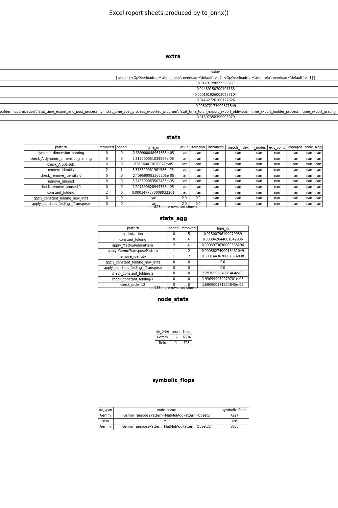

Note
Go to the end to download the full example code.
Excel report produced by the torch exporter#
Every call to to_onnx with a
filename argument saves two artifacts next to the .onnx file:
the ONNX model itself, and
a companion
.xlsxworkbook that contains up to six sheets covering different aspects of the export process.
This example exports a small model, reads the workbook back, and visualises the content of every sheet so you can see what each page looks like.
The six sheets are:
statsOne row per optimisation rule application — pattern name, number of nodes added/removed, and time spent.
stats_aggThe same data aggregated by rule name and sorted by nodes removed (descending).
extraScalar key/value pairs recorded during the export: timing entries, counters, export-option flags, etc.
build_statsTiming and counter entries collected by the low-level
BuildStatsobject embedded in the model container (written only for large_model exports).node_statsPer-op-type breakdown: how many nodes of each type are in the exported model and the estimated FLOPs for each type.
symbolic_flopsPer-node symbolic FLOPs expressions computed by
BasicShapeBuilderwithInferenceMode.COST. When the model’s input shapes contain symbolic dimensions the values are symbolic arithmetic strings; for fully static shapes they are integers.
Imports#
import os
import matplotlib.pyplot as plt
import pandas as pd
import torch
from yobx.torch.interpreter import to_onnx
1. Define and export a model#
We use a small two-layer MLP so that the export produces a non-trivial set of ONNX nodes and a visible optimisation report.
class SmallMLP(torch.nn.Module):
"""Two-layer MLP: Linear → ReLU → Linear."""
def __init__(self, in_features: int = 16, hidden: int = 32, out_features: int = 8):
super().__init__()
self.fc1 = torch.nn.Linear(in_features, hidden)
self.fc2 = torch.nn.Linear(hidden, out_features)
def forward(self, x: torch.Tensor) -> torch.Tensor:
return self.fc2(torch.relu(self.fc1(x)))
model = SmallMLP()
x = torch.randn(4, 16)
onnx_path = "plot_export_report.onnx"
xlsx_path = os.path.splitext(onnx_path)[0] + ".xlsx"
# ``filename`` triggers both the ONNX save and the Excel report.
artifact = to_onnx(model, (x,), filename=onnx_path)
print(f"ONNX saved : {onnx_path}")
print(f"Report saved: {xlsx_path}")
print(f"Nodes in graph: {len(artifact.graph.node)}")
print(f"Report repr : {artifact.report!r}")
ONNX saved : plot_export_report.onnx
Report saved: plot_export_report.xlsx
Nodes in graph: 3
Report repr : ExportReport(n_stats=633, extra=['builder', 'optimization', 'stat_time_export_and_post_processing', 'stat_time_post_process_exported_program', 'stat_time_torch_export_export_oblivious', 'time_export_builder_process', 'time_export_graph_module', 'time_export_to_onnx'], has_build_stats=False, n_node_stats=2, n_symbolic_flops=3)
2. Read every sheet from the workbook#
pandas.read_excel() with sheet_name=None returns an
{sheet_name: DataFrame} mapping so we can inspect every page.
sheets: dict[str, pd.DataFrame] = pd.read_excel(xlsx_path, sheet_name=None)
print(f"\nSheets in workbook: {list(sheets)}")
for name, df in sheets.items():
print(f"\n--- {name} ({df.shape[0]} rows × {df.shape[1]} cols) ---")
print(df.to_string(index=False))
Sheets in workbook: ['stats', 'stats_agg', 'extra', 'node_stats', 'symbolic_flops']
--- stats (633 rows × 13 cols) ---
pattern removed added time_in value iteration instances match_index n_nodes exit_point changed scale algo
dynamic_dimension_naming 0 0 3.219200e-05 NaN NaN NaN NaN NaN NaN NaN NaN NaN
check_A-dynamic_dimension_naming 0 0 2.674600e-05 NaN NaN NaN NaN NaN NaN NaN NaN NaN
check_A-opt-sub 0 0 2.544000e-05 NaN NaN NaN NaN NaN NaN NaN NaN NaN
remove_identity 2 1 9.044100e-05 NaN NaN NaN NaN NaN NaN NaN NaN NaN
check_remove_identity-0 0 0 2.474900e-05 NaN NaN NaN NaN NaN NaN NaN NaN NaN
remove_unused 0 0 6.298800e-05 NaN NaN NaN NaN NaN NaN NaN NaN NaN
check_remove_unused-1 0 0 2.414000e-05 NaN NaN NaN NaN NaN NaN NaN NaN NaN
constant_folding 2 0 4.642070e-04 NaN NaN NaN NaN NaN NaN NaN NaN NaN
apply_constant_folding_new_inits 0 0 NaN 2.0 0.0 NaN NaN NaN NaN NaN NaN NaN
apply_constant_folding__Transpose 0 0 NaN 2.0 0.0 NaN NaN NaN NaN NaN NaN NaN
check_constant_folding-2 0 0 2.536400e-05 NaN NaN NaN NaN NaN NaN NaN NaN NaN
remove_unused 0 0 4.766500e-05 NaN NaN NaN NaN NaN NaN NaN NaN NaN
check_remove_unused-3 0 0 1.835600e-05 NaN NaN NaN NaN NaN NaN NaN NaN NaN
patterns 0 0 1.341104e-02 NaN NaN NaN NaN NaN NaN NaN NaN NaN
check_pattern_00 0 0 3.022400e-05 NaN -1.0 NaN NaN NaN NaN NaN NaN NaN
match_BatchNormalizationPattern 0 0 2.376500e-05 NaN 0.0 0.0 0.0 NaN NaN NaN NaN NaN
match_BatchNormalizationTrainingPattern 0 0 1.135900e-05 NaN 0.0 0.0 0.0 NaN NaN NaN NaN NaN
match_CastPattern 0 0 9.398998e-06 NaN 0.0 0.0 0.0 NaN NaN NaN NaN NaN
match_CastCastPattern 0 0 8.137999e-06 NaN 0.0 0.0 0.0 NaN NaN NaN NaN NaN
match_ConcatGatherPattern 0 0 7.644001e-06 NaN 0.0 0.0 0.0 NaN NaN NaN NaN NaN
match_ConcatReshapePattern 0 0 9.316998e-06 NaN 0.0 0.0 0.0 NaN NaN NaN NaN NaN
match_ConvBiasNullPattern 0 0 7.068000e-06 NaN 0.0 0.0 0.0 NaN NaN NaN NaN NaN
match_PadConvPattern 0 0 5.954000e-06 NaN 0.0 0.0 0.0 NaN NaN NaN NaN NaN
match_ExpandPattern 0 0 6.345999e-06 NaN 0.0 0.0 0.0 NaN NaN NaN NaN NaN
match_ExpandUnsqueezeExpandPattern 0 0 5.741000e-06 NaN 0.0 0.0 0.0 NaN NaN NaN NaN NaN
match_GeluPattern 0 0 1.827282e-03 NaN 0.0 0.0 0.0 NaN NaN NaN NaN NaN
match_IdentityPattern 0 0 5.743050e-04 NaN 0.0 0.0 0.0 NaN NaN NaN NaN NaN
match_LeakyReluPattern 0 0 1.683740e-03 NaN 0.0 0.0 0.0 NaN NaN NaN NaN NaN
match_MulUnsqueezeUnsqueezePattern 0 0 1.151100e-05 NaN 0.0 0.0 0.0 NaN NaN NaN NaN NaN
match_ReshapePattern 0 0 8.774001e-06 NaN 0.0 0.0 0.0 NaN NaN NaN NaN NaN
match_ShapeBasedReshapeIsSqueezePattern 0 0 1.030000e-05 NaN 0.0 0.0 0.0 NaN NaN NaN NaN NaN
match_ShapeBasedStaticExpandPattern 0 0 7.077000e-06 NaN 0.0 0.0 0.0 NaN NaN NaN NaN NaN
match_ShapeBasedEditDistanceReshapePattern 0 0 6.672999e-06 NaN 0.0 0.0 0.0 NaN NaN NaN NaN NaN
match_ShapeBasedIdentityPattern 0 0 6.497998e-06 NaN 0.0 0.0 0.0 NaN NaN NaN NaN NaN
match_ShapedBasedReshapePattern 0 0 5.975999e-06 NaN 0.0 0.0 0.0 NaN NaN NaN NaN NaN
match_ShapeBasedSameChildrenPattern 0 0 7.484003e-06 NaN 0.0 0.0 0.0 NaN NaN NaN NaN NaN
match_ShapeBasedShapeShapeAddPattern 0 0 1.891700e-05 NaN 0.0 0.0 0.0 NaN NaN NaN NaN NaN
match_ReshapeReshapePattern 0 0 7.751998e-06 NaN 0.0 0.0 0.0 NaN NaN NaN NaN NaN
match_SameChildrenPattern 0 0 2.131500e-05 NaN 0.0 0.0 0.0 NaN NaN NaN NaN NaN
match_SameChildrenFromInputPattern 0 0 1.533400e-05 NaN 0.0 0.0 0.0 NaN NaN NaN NaN NaN
match_SoftmaxCrossEntropyLossCastPattern 0 0 1.863660e-03 NaN 0.0 0.0 0.0 NaN NaN NaN NaN NaN
match_SqueezeAddPattern 0 0 2.450400e-05 NaN 0.0 0.0 0.0 NaN NaN NaN NaN NaN
match_SqueezeBinaryUnsqueezePattern 0 0 7.610000e-06 NaN 0.0 0.0 0.0 NaN NaN NaN NaN NaN
match_SqueezeUnsqueezePattern 0 0 6.834001e-06 NaN 0.0 0.0 0.0 NaN NaN NaN NaN NaN
match_StaticConcatReshapePattern 0 0 7.614999e-06 NaN 0.0 0.0 0.0 NaN NaN NaN NaN NaN
match_SwapExpandReshapePattern 0 0 6.558999e-06 NaN 0.0 0.0 0.0 NaN NaN NaN NaN NaN
match_SwapExpandUnsqueezePattern 0 0 6.633003e-06 NaN 0.0 0.0 0.0 NaN NaN NaN NaN NaN
match_SwapUnaryPattern 0 0 7.401999e-06 NaN 0.0 0.0 0.0 NaN NaN NaN NaN NaN
match_SwapUnsqueezeTransposePattern 0 0 6.574999e-06 NaN 0.0 0.0 0.0 NaN NaN NaN NaN NaN
match_TransposeGatherPattern 0 0 6.937000e-06 NaN 0.0 0.0 0.0 NaN NaN NaN NaN NaN
match_TransposeReshapeTransposePattern 0 0 9.081999e-06 NaN 0.0 0.0 0.0 NaN NaN NaN NaN NaN
match_TransposeTransposePattern 0 0 5.959999e-06 NaN 0.0 0.0 0.0 NaN NaN NaN NaN NaN
match_UnsqueezeOrSqueezeReshapePattern 0 0 6.327999e-06 NaN 0.0 0.0 0.0 NaN NaN NaN NaN NaN
match_UnsqueezeReshapePattern 0 0 5.755999e-06 NaN 0.0 0.0 0.0 NaN NaN NaN NaN NaN
match_UnsqueezeUnsqueezePattern 0 0 5.991998e-06 NaN 0.0 0.0 0.0 NaN NaN NaN NaN NaN
match_FunctionAttentionPattern 0 0 7.455998e-06 NaN 0.0 0.0 0.0 NaN NaN NaN NaN NaN
match_FunctionAttentionGQAPattern 0 0 8.629999e-06 NaN 0.0 0.0 0.0 NaN NaN NaN NaN NaN
check_pattern_A20 0 0 3.122500e-05 NaN 0.0 NaN NaN NaN NaN NaN NaN NaN
remove_duplicated_shape 0 0 5.435999e-06 NaN 0.0 NaN NaN NaN NaN NaN NaN NaN
check_pattern_BD0 0 0 1.825800e-05 NaN 0.0 NaN NaN NaN NaN NaN NaN NaN
remove_identity_nodes 0 0 6.254500e-05 NaN 0.0 NaN NaN NaN NaN NaN NaN NaN
check_pattern_BI0 0 0 1.577600e-05 NaN 0.0 NaN NaN NaN NaN NaN NaN NaN
remove_unused 0 0 4.457200e-05 NaN 0.0 NaN NaN NaN NaN NaN NaN NaN
check_pattern_BUS0 0 0 1.517000e-05 NaN 0.0 NaN NaN NaN NaN NaN NaN NaN
build_graph_for_pattern 0 0 2.940400e-05 NaN 0.0 NaN NaN NaN NaN NaN NaN NaN
iteration_0 0 0 6.684568e-03 NaN 0.0 NaN NaN 5.0 NaN NaN NaN NaN
match_BatchNormalizationPattern 0 0 8.561998e-06 NaN 1.0 0.0 0.0 NaN NaN NaN NaN NaN
match_BatchNormalizationTrainingPattern 0 0 5.992999e-06 NaN 1.0 0.0 0.0 NaN NaN NaN NaN NaN
match_CastLayerNormalizationCastPattern 0 0 7.756000e-06 NaN 1.0 0.0 0.0 NaN NaN NaN NaN NaN
match_CastPattern 0 0 5.391001e-06 NaN 1.0 0.0 0.0 NaN NaN NaN NaN NaN
match_CastCastBinaryPattern 0 0 3.629300e-05 NaN 1.0 0.0 0.0 NaN NaN NaN NaN NaN
match_CastCastPattern 0 0 5.897000e-06 NaN 1.0 0.0 0.0 NaN NaN NaN NaN NaN
match_CastOpCastPattern 0 0 2.163000e-05 NaN 1.0 0.0 0.0 NaN NaN NaN NaN NaN
match_ClipClipPattern 0 0 7.171002e-06 NaN 1.0 0.0 0.0 NaN NaN NaN NaN NaN
match_ConcatEmptyPattern 0 0 6.907998e-06 NaN 1.0 0.0 0.0 NaN NaN NaN NaN NaN
match_ConcatGatherPattern 0 0 5.925001e-06 NaN 1.0 0.0 0.0 NaN NaN NaN NaN NaN
match_ConcatReshapePattern 0 0 6.441001e-06 NaN 1.0 0.0 0.0 NaN NaN NaN NaN NaN
match_ConcatTwiceUnaryPattern 0 0 9.053001e-06 NaN 1.0 0.0 0.0 NaN NaN NaN NaN NaN
match_ConstantToInitializerPattern 0 0 6.355003e-06 NaN 1.0 0.0 0.0 NaN NaN NaN NaN NaN
match_ConvBiasNullPattern 0 0 6.531001e-06 NaN 1.0 0.0 0.0 NaN NaN NaN NaN NaN
match_PadConvPattern 0 0 5.803999e-06 NaN 1.0 0.0 0.0 NaN NaN NaN NaN NaN
match_DropoutPattern 0 0 5.731999e-06 NaN 1.0 0.0 0.0 NaN NaN NaN NaN NaN
match_ExpandPattern 0 0 5.259000e-06 NaN 1.0 0.0 0.0 NaN NaN NaN NaN NaN
match_ExpandBroadcastPattern 0 0 6.834998e-06 NaN 1.0 0.0 0.0 NaN NaN NaN NaN NaN
match_ExpandSwapPattern 0 0 6.270002e-06 NaN 1.0 0.0 0.0 NaN NaN NaN NaN NaN
match_ExpandUnsqueezeExpandPattern 0 0 5.138001e-06 NaN 1.0 0.0 0.0 NaN NaN NaN NaN NaN
match_GathersSplitPattern 0 0 6.007998e-06 NaN 1.0 0.0 0.0 NaN NaN NaN NaN NaN
match_GeluPattern 0 0 1.272400e-05 NaN 1.0 0.0 0.0 NaN NaN NaN NaN NaN
match_IdentityPattern 0 0 1.380010e-04 NaN 1.0 0.0 0.0 NaN NaN NaN NaN NaN
match_LayerNormalizationPattern 0 0 1.089600e-05 NaN 1.0 0.0 0.0 NaN NaN NaN NaN NaN
match_LayerNormalizationScalePattern 0 0 9.990999e-06 NaN 1.0 0.0 0.0 NaN NaN NaN NaN NaN
match_LeakyReluPattern 0 0 1.870800e-05 NaN 1.0 0.0 0.0 NaN NaN NaN NaN NaN
match_MaxReluPattern 0 0 9.679003e-06 NaN 1.0 0.0 0.0 NaN NaN NaN NaN NaN
match_MulMulMulScalarPattern 0 0 9.389001e-06 NaN 1.0 0.0 0.0 NaN NaN NaN NaN NaN
match_MulUnsqueezeUnsqueezePattern 0 0 7.654999e-06 NaN 1.0 0.0 0.0 NaN NaN NaN NaN NaN
match_NotNotPattern 0 0 8.382998e-06 NaN 1.0 0.0 0.0 NaN NaN NaN NaN NaN
match_NotWherePattern 0 0 7.687002e-06 NaN 1.0 0.0 0.0 NaN NaN NaN NaN NaN
match_ReduceArgTopKPattern 0 0 1.107100e-05 NaN 1.0 0.0 0.0 NaN NaN NaN NaN NaN
match_ReduceReshapePattern 0 0 1.073100e-05 NaN 1.0 0.0 0.0 NaN NaN NaN NaN NaN
match_ReduceSumNormalizePattern 0 0 5.558999e-06 NaN 1.0 0.0 0.0 NaN NaN NaN NaN NaN
match_ReshapePattern 0 0 5.641999e-06 NaN 1.0 0.0 0.0 NaN NaN NaN NaN NaN
match_ReshapeMatMulReshapePattern 0 0 1.687400e-05 NaN 1.0 0.0 0.0 NaN NaN NaN NaN NaN
match_Reshape2Of3Pattern 0 0 2.446200e-05 NaN 1.0 0.0 0.0 NaN NaN NaN NaN NaN
match_ReshapeReshapeBinaryPattern 0 0 1.730300e-05 NaN 1.0 0.0 0.0 NaN NaN NaN NaN NaN
match_GemmTransposePattern 0 0 6.704999e-06 NaN 1.0 0.0 0.0 NaN NaN NaN NaN NaN
match_MatMulReshape2Of3Pattern 0 0 2.732800e-05 NaN 1.0 0.0 0.0 NaN NaN NaN NaN NaN
match_MulMulMatMulPattern 0 0 1.594200e-05 NaN 1.0 0.0 0.0 NaN NaN NaN NaN NaN
match_ShapeBasedReshapeIsSqueezePattern 0 0 6.533999e-06 NaN 1.0 0.0 0.0 NaN NaN NaN NaN NaN
match_ShapeBasedStaticExpandPattern 0 0 5.092003e-06 NaN 1.0 0.0 0.0 NaN NaN NaN NaN NaN
match_ShapeBasedConcatExpandPattern 0 0 6.550999e-06 NaN 1.0 0.0 0.0 NaN NaN NaN NaN NaN
match_ShapeBasedEditDistanceReshapePattern 0 0 5.827998e-06 NaN 1.0 0.0 0.0 NaN NaN NaN NaN NaN
match_ShapeBasedIdentityPattern 0 0 5.430000e-06 NaN 1.0 0.0 0.0 NaN NaN NaN NaN NaN
match_ShapeBasedExpandBroadcastPattern 0 0 2.066000e-05 NaN 1.0 0.0 0.0 NaN NaN NaN NaN NaN
match_ShapeBasedExpandBroadcastMatMulPattern 0 0 1.727800e-05 NaN 1.0 0.0 0.0 NaN NaN NaN NaN NaN
match_ShapeBasedExpandCastWhereSwapPattern 0 0 6.678001e-06 NaN 1.0 0.0 0.0 NaN NaN NaN NaN NaN
match_ShapeBasedExpandSwapPattern 0 0 1.665200e-05 NaN 1.0 0.0 0.0 NaN NaN NaN NaN NaN
match_ShapeBasedMatMulToMulPattern 0 0 1.607800e-05 NaN 1.0 0.0 0.0 NaN NaN NaN NaN NaN
match_ShapedBasedReshapePattern 0 0 5.880000e-06 NaN 1.0 0.0 0.0 NaN NaN NaN NaN NaN
match_ShapeBasedSameChildrenPattern 0 0 5.778002e-06 NaN 1.0 0.0 0.0 NaN NaN NaN NaN NaN
match_ShapeBasedShapeShapeAddPattern 0 0 9.598003e-06 NaN 1.0 0.0 0.0 NaN NaN NaN NaN NaN
match_ReshapeReshapePattern 0 0 5.719001e-06 NaN 1.0 0.0 0.0 NaN NaN NaN NaN NaN
match_RotaryEmbeddingPattern 0 0 6.714999e-06 NaN 1.0 0.0 0.0 NaN NaN NaN NaN NaN
match_SameChildrenPattern 0 0 1.368900e-05 NaN 1.0 0.0 0.0 NaN NaN NaN NaN NaN
match_SameChildrenFromInputPattern 0 0 1.203300e-05 NaN 1.0 0.0 0.0 NaN NaN NaN NaN NaN
match_SequenceConstructAtPattern 0 0 7.900002e-06 NaN 1.0 0.0 0.0 NaN NaN NaN NaN NaN
match_SplitToSequenceSequenceAtPattern 0 0 6.113001e-06 NaN 1.0 0.0 0.0 NaN NaN NaN NaN NaN
match_SliceSlicePattern 0 0 6.496000e-06 NaN 1.0 0.0 0.0 NaN NaN NaN NaN NaN
match_SlicesSplitPattern 0 0 6.129001e-06 NaN 1.0 0.0 0.0 NaN NaN NaN NaN NaN
match_SoftmaxCrossEntropyLossCastPattern 0 0 1.341000e-05 NaN 1.0 0.0 0.0 NaN NaN NaN NaN NaN
match_SplitConcatPattern 0 0 5.689002e-06 NaN 1.0 0.0 0.0 NaN NaN NaN NaN NaN
match_SqueezeAddPattern 0 0 1.094800e-05 NaN 1.0 0.0 0.0 NaN NaN NaN NaN NaN
match_SqueezeBinaryUnsqueezePattern 0 0 4.996000e-06 NaN 1.0 0.0 0.0 NaN NaN NaN NaN NaN
match_SqueezeUnsqueezePattern 0 0 6.085000e-06 NaN 1.0 0.0 0.0 NaN NaN NaN NaN NaN
match_StaticConcatReshapePattern 0 0 5.457001e-06 NaN 1.0 0.0 0.0 NaN NaN NaN NaN NaN
match_Sub1MulPattern 0 0 6.279999e-06 NaN 1.0 0.0 0.0 NaN NaN NaN NaN NaN
match_SwapExpandReshapePattern 0 0 1.189200e-05 NaN 1.0 0.0 0.0 NaN NaN NaN NaN NaN
match_SwapExpandUnsqueezePattern 0 0 6.669001e-06 NaN 1.0 0.0 0.0 NaN NaN NaN NaN NaN
match_SwapRangeAddScalarPattern 0 0 8.610001e-06 NaN 1.0 0.0 0.0 NaN NaN NaN NaN NaN
match_SwapUnaryPattern 0 0 6.349001e-06 NaN 1.0 0.0 0.0 NaN NaN NaN NaN NaN
match_SwapUnsqueezeTransposePattern 0 0 5.004000e-06 NaN 1.0 0.0 0.0 NaN NaN NaN NaN NaN
match_SwitchOrderBinaryPattern 0 0 1.860900e-05 NaN 1.0 0.0 0.0 NaN NaN NaN NaN NaN
match_SwitchReshapeActivationPattern 0 0 1.243000e-05 NaN 1.0 0.0 0.0 NaN NaN NaN NaN NaN
match_TransposeEqualReshapePattern 0 0 6.719001e-06 NaN 1.0 0.0 0.0 NaN NaN NaN NaN NaN
match_TransposeGatherPattern 0 0 5.354999e-06 NaN 1.0 0.0 0.0 NaN NaN NaN NaN NaN
match_TransposeMatMulPattern 0 0 2.409200e-05 NaN 1.0 0.0 0.0 NaN NaN NaN NaN NaN
match_TransposeReshapeMatMulPattern 0 0 1.767700e-05 NaN 1.0 0.0 0.0 NaN NaN NaN NaN NaN
match_TransposeReshapeTransposePattern 0 0 5.111000e-06 NaN 1.0 0.0 0.0 NaN NaN NaN NaN NaN
match_TransposeTransposePattern 0 0 5.321999e-06 NaN 1.0 0.0 0.0 NaN NaN NaN NaN NaN
match_UnsqueezeEqualPattern 0 0 6.132999e-06 NaN 1.0 0.0 0.0 NaN NaN NaN NaN NaN
match_UnsqueezeOrSqueezeReshapePattern 0 0 5.672999e-06 NaN 1.0 0.0 0.0 NaN NaN NaN NaN NaN
match_UnsqueezeReshapePattern 0 0 5.679998e-06 NaN 1.0 0.0 0.0 NaN NaN NaN NaN NaN
match_UnsqueezeUnsqueezePattern 0 0 4.830999e-06 NaN 1.0 0.0 0.0 NaN NaN NaN NaN NaN
match_WhereAddPattern 0 0 6.071001e-06 NaN 1.0 0.0 0.0 NaN NaN NaN NaN NaN
match_RotaryConcatPartPattern 0 0 9.882999e-06 NaN 1.0 0.0 0.0 NaN NaN NaN NaN NaN
match_FunctionAttentionPattern 0 0 6.302002e-06 NaN 1.0 0.0 0.0 NaN NaN NaN NaN NaN
match_FunctionAttentionGQAPattern 0 0 6.472001e-06 NaN 1.0 0.0 0.0 NaN NaN NaN NaN NaN
match_FunctionCausalMaskPattern 0 0 7.109000e-06 NaN 1.0 0.0 0.0 NaN NaN NaN NaN NaN
match_FunctionCausalMaskMulAddPattern 0 0 1.223500e-05 NaN 1.0 0.0 0.0 NaN NaN NaN NaN NaN
match_FunctionCosSinCachePattern 0 0 5.875998e-06 NaN 1.0 0.0 0.0 NaN NaN NaN NaN NaN
match_FunctionHalfRotaryEmbeddingPattern 0 0 5.876002e-06 NaN 1.0 0.0 0.0 NaN NaN NaN NaN NaN
match_RMSNormalizationPattern 0 0 6.311999e-06 NaN 1.0 0.0 0.0 NaN NaN NaN NaN NaN
match_RMSNormalizationMulPattern 0 0 5.548001e-06 NaN 1.0 0.0 0.0 NaN NaN NaN NaN NaN
check_pattern_A20 0 0 2.331900e-05 NaN 1.0 NaN NaN NaN NaN NaN NaN NaN
remove_duplicated_shape 0 0 4.411999e-06 NaN 1.0 NaN NaN NaN NaN NaN NaN NaN
check_pattern_BD0 0 0 1.454500e-05 NaN 1.0 NaN NaN NaN NaN NaN NaN NaN
remove_identity_nodes 0 0 4.814000e-05 NaN 1.0 NaN NaN NaN NaN NaN NaN NaN
check_pattern_BI0 0 0 1.452100e-05 NaN 1.0 NaN NaN NaN NaN NaN NaN NaN
remove_unused 0 0 4.193200e-05 NaN 1.0 NaN NaN NaN NaN NaN NaN NaN
check_pattern_BUS0 0 0 1.438900e-05 NaN 1.0 NaN NaN NaN NaN NaN NaN NaN
build_graph_for_pattern 0 0 2.997100e-05 NaN 1.0 NaN NaN NaN NaN NaN NaN NaN
iteration_1 0 0 1.450745e-03 NaN 1.0 NaN NaN 5.0 NaN NaN NaN NaN
match_BatchNormalizationPattern 0 0 7.746999e-06 NaN 2.0 0.0 0.0 NaN NaN NaN NaN NaN
match_BatchNormalizationTrainingPattern 0 0 5.450998e-06 NaN 2.0 0.0 0.0 NaN NaN NaN NaN NaN
match_CastLayerNormalizationCastPattern 0 0 5.797003e-06 NaN 2.0 0.0 0.0 NaN NaN NaN NaN NaN
match_CastPattern 0 0 5.452002e-06 NaN 2.0 0.0 0.0 NaN NaN NaN NaN NaN
match_CastCastBinaryPattern 0 0 2.262100e-05 NaN 2.0 0.0 0.0 NaN NaN NaN NaN NaN
match_CastCastPattern 0 0 5.671998e-06 NaN 2.0 0.0 0.0 NaN NaN NaN NaN NaN
match_CastOpCastPattern 0 0 1.746000e-05 NaN 2.0 0.0 0.0 NaN NaN NaN NaN NaN
match_ClipClipPattern 0 0 5.418999e-06 NaN 2.0 0.0 0.0 NaN NaN NaN NaN NaN
match_ConcatEmptyPattern 0 0 5.128000e-06 NaN 2.0 0.0 0.0 NaN NaN NaN NaN NaN
match_ConcatGatherPattern 0 0 5.524002e-06 NaN 2.0 0.0 0.0 NaN NaN NaN NaN NaN
match_ConcatReshapePattern 0 0 5.901999e-06 NaN 2.0 0.0 0.0 NaN NaN NaN NaN NaN
match_ConcatTwiceUnaryPattern 0 0 5.517999e-06 NaN 2.0 0.0 0.0 NaN NaN NaN NaN NaN
match_ConstantToInitializerPattern 0 0 5.074999e-06 NaN 2.0 0.0 0.0 NaN NaN NaN NaN NaN
match_ConvBiasNullPattern 0 0 4.788999e-06 NaN 2.0 0.0 0.0 NaN NaN NaN NaN NaN
match_PadConvPattern 0 0 4.966001e-06 NaN 2.0 0.0 0.0 NaN NaN NaN NaN NaN
match_DropoutPattern 0 0 4.589001e-06 NaN 2.0 0.0 0.0 NaN NaN NaN NaN NaN
match_ExpandPattern 0 0 5.315000e-06 NaN 2.0 0.0 0.0 NaN NaN NaN NaN NaN
match_ExpandBroadcastPattern 0 0 5.398000e-06 NaN 2.0 0.0 0.0 NaN NaN NaN NaN NaN
match_ExpandSwapPattern 0 0 4.955000e-06 NaN 2.0 0.0 0.0 NaN NaN NaN NaN NaN
match_ExpandUnsqueezeExpandPattern 0 0 4.834998e-06 NaN 2.0 0.0 0.0 NaN NaN NaN NaN NaN
match_GathersSplitPattern 0 0 5.243000e-06 NaN 2.0 0.0 0.0 NaN NaN NaN NaN NaN
match_GeluPattern 0 0 1.310100e-05 NaN 2.0 0.0 0.0 NaN NaN NaN NaN NaN
match_IdentityPattern 0 0 7.956400e-05 NaN 2.0 0.0 0.0 NaN NaN NaN NaN NaN
match_LayerNormalizationPattern 0 0 6.425998e-06 NaN 2.0 0.0 0.0 NaN NaN NaN NaN NaN
match_LayerNormalizationScalePattern 0 0 5.376998e-06 NaN 2.0 0.0 0.0 NaN NaN NaN NaN NaN
match_LeakyReluPattern 0 0 1.233400e-05 NaN 2.0 0.0 0.0 NaN NaN NaN NaN NaN
match_MaxReluPattern 0 0 5.279999e-06 NaN 2.0 0.0 0.0 NaN NaN NaN NaN NaN
match_MulMulMulScalarPattern 0 0 5.473998e-06 NaN 2.0 0.0 0.0 NaN NaN NaN NaN NaN
match_MulUnsqueezeUnsqueezePattern 0 0 4.756999e-06 NaN 2.0 0.0 0.0 NaN NaN NaN NaN NaN
match_NotNotPattern 0 0 4.894999e-06 NaN 2.0 0.0 0.0 NaN NaN NaN NaN NaN
match_NotWherePattern 0 0 4.596997e-06 NaN 2.0 0.0 0.0 NaN NaN NaN NaN NaN
match_ReduceArgTopKPattern 0 0 5.620001e-06 NaN 2.0 0.0 0.0 NaN NaN NaN NaN NaN
match_ReduceReshapePattern 0 0 5.508999e-06 NaN 2.0 0.0 0.0 NaN NaN NaN NaN NaN
match_ReduceSumNormalizePattern 0 0 4.704001e-06 NaN 2.0 0.0 0.0 NaN NaN NaN NaN NaN
match_ReshapePattern 0 0 5.239999e-06 NaN 2.0 0.0 0.0 NaN NaN NaN NaN NaN
match_ReshapeMatMulReshapePattern 0 0 1.145000e-05 NaN 2.0 0.0 0.0 NaN NaN NaN NaN NaN
match_Reshape2Of3Pattern 0 0 1.691900e-05 NaN 2.0 0.0 0.0 NaN NaN NaN NaN NaN
match_ReshapeReshapeBinaryPattern 0 0 1.274700e-05 NaN 2.0 0.0 0.0 NaN NaN NaN NaN NaN
match_GemmTransposePattern 0 0 5.444999e-06 NaN 2.0 0.0 0.0 NaN NaN NaN NaN NaN
match_MatMulReshape2Of3Pattern 0 0 2.109500e-05 NaN 2.0 0.0 0.0 NaN NaN NaN NaN NaN
match_MulMulMatMulPattern 0 0 1.283900e-05 NaN 2.0 0.0 0.0 NaN NaN NaN NaN NaN
match_ShapeBasedReshapeIsSqueezePattern 0 0 5.954000e-06 NaN 2.0 0.0 0.0 NaN NaN NaN NaN NaN
match_ShapeBasedStaticExpandPattern 0 0 5.089998e-06 NaN 2.0 0.0 0.0 NaN NaN NaN NaN NaN
match_ShapeBasedConcatExpandPattern 0 0 5.172998e-06 NaN 2.0 0.0 0.0 NaN NaN NaN NaN NaN
match_ShapeBasedEditDistanceReshapePattern 0 0 4.994003e-06 NaN 2.0 0.0 0.0 NaN NaN NaN NaN NaN
match_ShapeBasedIdentityPattern 0 0 5.165999e-06 NaN 2.0 0.0 0.0 NaN NaN NaN NaN NaN
match_ShapeBasedExpandBroadcastPattern 0 0 1.553100e-05 NaN 2.0 0.0 0.0 NaN NaN NaN NaN NaN
match_ShapeBasedExpandBroadcastMatMulPattern 0 0 1.369000e-05 NaN 2.0 0.0 0.0 NaN NaN NaN NaN NaN
match_ShapeBasedExpandCastWhereSwapPattern 0 0 4.815000e-06 NaN 2.0 0.0 0.0 NaN NaN NaN NaN NaN
match_ShapeBasedExpandSwapPattern 0 0 1.340100e-05 NaN 2.0 0.0 0.0 NaN NaN NaN NaN NaN
match_ShapeBasedMatMulToMulPattern 0 0 1.290700e-05 NaN 2.0 0.0 0.0 NaN NaN NaN NaN NaN
match_ShapedBasedReshapePattern 0 0 5.307000e-06 NaN 2.0 0.0 0.0 NaN NaN NaN NaN NaN
match_ShapeBasedSameChildrenPattern 0 0 5.145001e-06 NaN 2.0 0.0 0.0 NaN NaN NaN NaN NaN
match_ShapeBasedShapeShapeAddPattern 0 0 8.573003e-06 NaN 2.0 0.0 0.0 NaN NaN NaN NaN NaN
match_ReshapeReshapePattern 0 0 5.103000e-06 NaN 2.0 0.0 0.0 NaN NaN NaN NaN NaN
match_RotaryEmbeddingPattern 0 0 4.455000e-06 NaN 2.0 0.0 0.0 NaN NaN NaN NaN NaN
match_SameChildrenPattern 0 0 1.303400e-05 NaN 2.0 0.0 0.0 NaN NaN NaN NaN NaN
match_SameChildrenFromInputPattern 0 0 1.042400e-05 NaN 2.0 0.0 0.0 NaN NaN NaN NaN NaN
match_SequenceConstructAtPattern 0 0 4.993002e-06 NaN 2.0 0.0 0.0 NaN NaN NaN NaN NaN
match_SplitToSequenceSequenceAtPattern 0 0 4.710000e-06 NaN 2.0 0.0 0.0 NaN NaN NaN NaN NaN
match_SliceSlicePattern 0 0 5.121998e-06 NaN 2.0 0.0 0.0 NaN NaN NaN NaN NaN
match_SlicesSplitPattern 0 0 4.759000e-06 NaN 2.0 0.0 0.0 NaN NaN NaN NaN NaN
match_SoftmaxCrossEntropyLossCastPattern 0 0 1.252700e-05 NaN 2.0 0.0 0.0 NaN NaN NaN NaN NaN
match_SplitConcatPattern 0 0 5.675000e-06 NaN 2.0 0.0 0.0 NaN NaN NaN NaN NaN
match_SqueezeAddPattern 0 0 1.082600e-05 NaN 2.0 0.0 0.0 NaN NaN NaN NaN NaN
match_SqueezeBinaryUnsqueezePattern 0 0 4.597001e-06 NaN 2.0 0.0 0.0 NaN NaN NaN NaN NaN
match_SqueezeUnsqueezePattern 0 0 5.286001e-06 NaN 2.0 0.0 0.0 NaN NaN NaN NaN NaN
match_StaticConcatReshapePattern 0 0 5.035999e-06 NaN 2.0 0.0 0.0 NaN NaN NaN NaN NaN
match_Sub1MulPattern 0 0 4.732003e-06 NaN 2.0 0.0 0.0 NaN NaN NaN NaN NaN
match_SwapExpandReshapePattern 0 0 4.538000e-06 NaN 2.0 0.0 0.0 NaN NaN NaN NaN NaN
match_SwapExpandUnsqueezePattern 0 0 4.958998e-06 NaN 2.0 0.0 0.0 NaN NaN NaN NaN NaN
match_SwapRangeAddScalarPattern 0 0 4.901998e-06 NaN 2.0 0.0 0.0 NaN NaN NaN NaN NaN
match_SwapUnaryPattern 0 0 5.025002e-06 NaN 2.0 0.0 0.0 NaN NaN NaN NaN NaN
match_SwapUnsqueezeTransposePattern 0 0 4.230998e-06 NaN 2.0 0.0 0.0 NaN NaN NaN NaN NaN
match_SwitchOrderBinaryPattern 0 0 1.253700e-05 NaN 2.0 0.0 0.0 NaN NaN NaN NaN NaN
match_SwitchReshapeActivationPattern 0 0 1.048300e-05 NaN 2.0 0.0 0.0 NaN NaN NaN NaN NaN
match_TransposeEqualReshapePattern 0 0 5.235001e-06 NaN 2.0 0.0 0.0 NaN NaN NaN NaN NaN
match_TransposeGatherPattern 0 0 4.904003e-06 NaN 2.0 0.0 0.0 NaN NaN NaN NaN NaN
match_TransposeMatMulPattern 0 0 1.787200e-05 NaN 2.0 0.0 0.0 NaN NaN NaN NaN NaN
match_TransposeReshapeMatMulPattern 0 0 1.172200e-05 NaN 2.0 0.0 0.0 NaN NaN NaN NaN NaN
match_TransposeReshapeTransposePattern 0 0 4.736998e-06 NaN 2.0 0.0 0.0 NaN NaN NaN NaN NaN
match_TransposeTransposePattern 0 0 4.554000e-06 NaN 2.0 0.0 0.0 NaN NaN NaN NaN NaN
match_UnsqueezeEqualPattern 0 0 4.891001e-06 NaN 2.0 0.0 0.0 NaN NaN NaN NaN NaN
match_UnsqueezeOrSqueezeReshapePattern 0 0 5.018999e-06 NaN 2.0 0.0 0.0 NaN NaN NaN NaN NaN
match_UnsqueezeReshapePattern 0 0 5.012000e-06 NaN 2.0 0.0 0.0 NaN NaN NaN NaN NaN
match_UnsqueezeUnsqueezePattern 0 0 4.408001e-06 NaN 2.0 0.0 0.0 NaN NaN NaN NaN NaN
match_WhereAddPattern 0 0 4.646998e-06 NaN 2.0 0.0 0.0 NaN NaN NaN NaN NaN
match_RotaryConcatPartPattern 0 0 7.783001e-06 NaN 2.0 0.0 0.0 NaN NaN NaN NaN NaN
match_FunctionAttentionPattern 0 0 6.181999e-06 NaN 2.0 0.0 0.0 NaN NaN NaN NaN NaN
match_FunctionAttentionGQAPattern 0 0 6.099999e-06 NaN 2.0 0.0 0.0 NaN NaN NaN NaN NaN
match_FunctionCausalMaskPattern 0 0 4.972000e-06 NaN 2.0 0.0 0.0 NaN NaN NaN NaN NaN
match_FunctionCausalMaskMulAddPattern 0 0 8.742001e-06 NaN 2.0 0.0 0.0 NaN NaN NaN NaN NaN
match_FunctionCosSinCachePattern 0 0 4.868998e-06 NaN 2.0 0.0 0.0 NaN NaN NaN NaN NaN
match_FunctionHalfRotaryEmbeddingPattern 0 0 4.838002e-06 NaN 2.0 0.0 0.0 NaN NaN NaN NaN NaN
match_RMSNormalizationPattern 0 0 4.598001e-06 NaN 2.0 0.0 0.0 NaN NaN NaN NaN NaN
match_RMSNormalizationMulPattern 0 0 4.284000e-06 NaN 2.0 0.0 0.0 NaN NaN NaN NaN NaN
match_AttentionGQAPattern 0 0 6.808998e-06 NaN 2.0 0.0 0.0 NaN NaN NaN NaN NaN
check_pattern_A20 0 0 1.930300e-05 NaN 2.0 NaN NaN NaN NaN NaN NaN NaN
remove_duplicated_shape 0 0 2.837998e-06 NaN 2.0 NaN NaN NaN NaN NaN NaN NaN
check_pattern_BD0 0 0 1.412900e-05 NaN 2.0 NaN NaN NaN NaN NaN NaN NaN
remove_identity_nodes 0 0 4.037500e-05 NaN 2.0 NaN NaN NaN NaN NaN NaN NaN
check_pattern_BI0 0 0 1.463400e-05 NaN 2.0 NaN NaN NaN NaN NaN NaN NaN
remove_unused 0 0 3.894200e-05 NaN 2.0 NaN NaN NaN NaN NaN NaN NaN
check_pattern_BUS0 0 0 1.362500e-05 NaN 2.0 NaN NaN NaN NaN NaN NaN NaN
build_graph_for_pattern 0 0 2.881100e-05 NaN 2.0 NaN NaN NaN NaN NaN NaN NaN
iteration_2 0 0 1.091607e-03 NaN 2.0 NaN NaN 5.0 NaN NaN NaN NaN
match_BatchNormalizationPattern 0 0 7.331000e-06 NaN 3.0 0.0 0.0 NaN NaN NaN NaN NaN
match_BatchNormalizationTrainingPattern 0 0 5.320002e-06 NaN 3.0 0.0 0.0 NaN NaN NaN NaN NaN
match_CastLayerNormalizationCastPattern 0 0 5.652997e-06 NaN 3.0 0.0 0.0 NaN NaN NaN NaN NaN
match_CastPattern 0 0 4.964997e-06 NaN 3.0 0.0 0.0 NaN NaN NaN NaN NaN
match_CastCastBinaryPattern 0 0 2.198700e-05 NaN 3.0 0.0 0.0 NaN NaN NaN NaN NaN
match_CastCastPattern 0 0 5.302998e-06 NaN 3.0 0.0 0.0 NaN NaN NaN NaN NaN
match_CastOpCastPattern 0 0 1.566500e-05 NaN 3.0 0.0 0.0 NaN NaN NaN NaN NaN
match_ClipClipPattern 0 0 5.520000e-06 NaN 3.0 0.0 0.0 NaN NaN NaN NaN NaN
match_ConcatEmptyPattern 0 0 4.972997e-06 NaN 3.0 0.0 0.0 NaN NaN NaN NaN NaN
match_ConcatGatherPattern 0 0 5.102003e-06 NaN 3.0 0.0 0.0 NaN NaN NaN NaN NaN
match_ConcatReshapePattern 0 0 5.342998e-06 NaN 3.0 0.0 0.0 NaN NaN NaN NaN NaN
match_ConcatTwiceUnaryPattern 0 0 5.274003e-06 NaN 3.0 0.0 0.0 NaN NaN NaN NaN NaN
match_ConstantToInitializerPattern 0 0 5.143000e-06 NaN 3.0 0.0 0.0 NaN NaN NaN NaN NaN
match_ConvBiasNullPattern 0 0 4.865997e-06 NaN 3.0 0.0 0.0 NaN NaN NaN NaN NaN
match_PadConvPattern 0 0 4.765003e-06 NaN 3.0 0.0 0.0 NaN NaN NaN NaN NaN
match_DropoutPattern 0 0 4.645000e-06 NaN 3.0 0.0 0.0 NaN NaN NaN NaN NaN
match_ExpandPattern 0 0 2.873500e-05 NaN 3.0 0.0 0.0 NaN NaN NaN NaN NaN
match_ExpandBroadcastPattern 0 0 8.177001e-06 NaN 3.0 0.0 0.0 NaN NaN NaN NaN NaN
match_ExpandSwapPattern 0 0 7.623999e-06 NaN 3.0 0.0 0.0 NaN NaN NaN NaN NaN
match_ExpandUnsqueezeExpandPattern 0 0 6.476999e-06 NaN 3.0 0.0 0.0 NaN NaN NaN NaN NaN
match_GathersSplitPattern 0 0 5.006001e-06 NaN 3.0 0.0 0.0 NaN NaN NaN NaN NaN
match_GeluPattern 0 0 1.305600e-05 NaN 3.0 0.0 0.0 NaN NaN NaN NaN NaN
match_IdentityPattern 0 0 7.530500e-05 NaN 3.0 0.0 0.0 NaN NaN NaN NaN NaN
match_LayerNormalizationPattern 0 0 5.587000e-06 NaN 3.0 0.0 0.0 NaN NaN NaN NaN NaN
match_LayerNormalizationScalePattern 0 0 4.662998e-06 NaN 3.0 0.0 0.0 NaN NaN NaN NaN NaN
match_LeakyReluPattern 0 0 1.183900e-05 NaN 3.0 0.0 0.0 NaN NaN NaN NaN NaN
match_MaxReluPattern 0 0 5.459002e-06 NaN 3.0 0.0 0.0 NaN NaN NaN NaN NaN
match_MulMulMulScalarPattern 0 0 5.183003e-06 NaN 3.0 0.0 0.0 NaN NaN NaN NaN NaN
match_MulUnsqueezeUnsqueezePattern 0 0 6.725000e-06 NaN 3.0 0.0 0.0 NaN NaN NaN NaN NaN
match_NotNotPattern 0 0 5.274997e-06 NaN 3.0 0.0 0.0 NaN NaN NaN NaN NaN
match_NotWherePattern 0 0 5.103000e-06 NaN 3.0 0.0 0.0 NaN NaN NaN NaN NaN
match_ReduceArgTopKPattern 0 0 6.963000e-06 NaN 3.0 0.0 0.0 NaN NaN NaN NaN NaN
match_ReduceReshapePattern 0 0 6.644001e-06 NaN 3.0 0.0 0.0 NaN NaN NaN NaN NaN
match_ReduceSumNormalizePattern 0 0 4.603000e-06 NaN 3.0 0.0 0.0 NaN NaN NaN NaN NaN
match_ReshapePattern 0 0 5.365997e-06 NaN 3.0 0.0 0.0 NaN NaN NaN NaN NaN
match_ReshapeMatMulReshapePattern 0 0 1.255800e-05 NaN 3.0 0.0 0.0 NaN NaN NaN NaN NaN
match_Reshape2Of3Pattern 0 0 1.808100e-05 NaN 3.0 0.0 0.0 NaN NaN NaN NaN NaN
match_ReshapeReshapeBinaryPattern 0 0 1.304300e-05 NaN 3.0 0.0 0.0 NaN NaN NaN NaN NaN
match_MatMulAddPattern 0 0 8.759800e-05 NaN 3.0 2.0 2.0 NaN NaN NaN NaN NaN
match_GemmTransposePattern 0 0 8.253999e-06 NaN 3.0 0.0 2.0 NaN NaN NaN NaN NaN
match_MatMulReshape2Of3Pattern 0 0 2.544000e-05 NaN 3.0 0.0 2.0 NaN NaN NaN NaN NaN
match_MulMulMatMulPattern 0 0 1.468500e-05 NaN 3.0 0.0 2.0 NaN NaN NaN NaN NaN
match_ShapeBasedReshapeIsSqueezePattern 0 0 6.369999e-06 NaN 3.0 0.0 2.0 NaN NaN NaN NaN NaN
match_ShapeBasedStaticExpandPattern 0 0 5.092999e-06 NaN 3.0 0.0 2.0 NaN NaN NaN NaN NaN
match_ShapeBasedConcatExpandPattern 0 0 5.546000e-06 NaN 3.0 0.0 2.0 NaN NaN NaN NaN NaN
match_ShapeBasedEditDistanceReshapePattern 0 0 5.728001e-06 NaN 3.0 0.0 2.0 NaN NaN NaN NaN NaN
match_ShapeBasedIdentityPattern 0 0 5.580001e-06 NaN 3.0 0.0 2.0 NaN NaN NaN NaN NaN
match_ShapeBasedExpandBroadcastPattern 0 0 1.778100e-05 NaN 3.0 0.0 2.0 NaN NaN NaN NaN NaN
match_ShapeBasedExpandBroadcastMatMulPattern 0 0 1.452000e-05 NaN 3.0 0.0 2.0 NaN NaN NaN NaN NaN
match_ShapeBasedExpandCastWhereSwapPattern 0 0 4.919002e-06 NaN 3.0 0.0 2.0 NaN NaN NaN NaN NaN
match_ShapeBasedExpandSwapPattern 0 0 1.418000e-05 NaN 3.0 0.0 2.0 NaN NaN NaN NaN NaN
match_ShapeBasedMatMulToMulPattern 0 0 1.354400e-05 NaN 3.0 0.0 2.0 NaN NaN NaN NaN NaN
match_ShapedBasedReshapePattern 0 0 5.654001e-06 NaN 3.0 0.0 2.0 NaN NaN NaN NaN NaN
match_ShapeBasedSameChildrenPattern 0 0 5.374997e-06 NaN 3.0 0.0 2.0 NaN NaN NaN NaN NaN
match_ShapeBasedShapeShapeAddPattern 0 0 8.477000e-06 NaN 3.0 0.0 2.0 NaN NaN NaN NaN NaN
match_ReshapeReshapePattern 0 0 5.215999e-06 NaN 3.0 0.0 2.0 NaN NaN NaN NaN NaN
match_RotaryEmbeddingPattern 0 0 5.157002e-06 NaN 3.0 0.0 2.0 NaN NaN NaN NaN NaN
match_SameChildrenPattern 0 0 1.293500e-05 NaN 3.0 0.0 2.0 NaN NaN NaN NaN NaN
match_SameChildrenFromInputPattern 0 0 1.068800e-05 NaN 3.0 0.0 2.0 NaN NaN NaN NaN NaN
match_SequenceConstructAtPattern 0 0 5.682003e-06 NaN 3.0 0.0 2.0 NaN NaN NaN NaN NaN
match_SplitToSequenceSequenceAtPattern 0 0 4.743997e-06 NaN 3.0 0.0 2.0 NaN NaN NaN NaN NaN
match_SliceSlicePattern 0 0 4.979000e-06 NaN 3.0 0.0 2.0 NaN NaN NaN NaN NaN
match_SlicesSplitPattern 0 0 5.728998e-06 NaN 3.0 0.0 2.0 NaN NaN NaN NaN NaN
match_SoftmaxCrossEntropyLossCastPattern 0 0 1.407300e-05 NaN 3.0 0.0 2.0 NaN NaN NaN NaN NaN
match_SplitConcatPattern 0 0 4.890000e-06 NaN 3.0 0.0 2.0 NaN NaN NaN NaN NaN
match_SqueezeAddPattern 0 0 1.113800e-05 NaN 3.0 0.0 2.0 NaN NaN NaN NaN NaN
match_SqueezeBinaryUnsqueezePattern 0 0 4.861999e-06 NaN 3.0 0.0 2.0 NaN NaN NaN NaN NaN
match_SqueezeUnsqueezePattern 0 0 6.036000e-06 NaN 3.0 0.0 2.0 NaN NaN NaN NaN NaN
match_StaticConcatReshapePattern 0 0 5.408001e-06 NaN 3.0 0.0 2.0 NaN NaN NaN NaN NaN
match_Sub1MulPattern 0 0 5.635000e-06 NaN 3.0 0.0 2.0 NaN NaN NaN NaN NaN
match_SwapExpandReshapePattern 0 0 4.709997e-06 NaN 3.0 0.0 2.0 NaN NaN NaN NaN NaN
match_SwapExpandUnsqueezePattern 0 0 4.809001e-06 NaN 3.0 0.0 2.0 NaN NaN NaN NaN NaN
match_SwapRangeAddScalarPattern 0 0 5.040001e-06 NaN 3.0 0.0 2.0 NaN NaN NaN NaN NaN
match_SwapUnaryPattern 0 0 6.181002e-06 NaN 3.0 0.0 2.0 NaN NaN NaN NaN NaN
match_SwapUnsqueezeTransposePattern 0 0 4.497000e-06 NaN 3.0 0.0 2.0 NaN NaN NaN NaN NaN
match_SwitchOrderBinaryPattern 0 0 1.358700e-05 NaN 3.0 0.0 2.0 NaN NaN NaN NaN NaN
match_SwitchReshapeActivationPattern 0 0 1.003500e-05 NaN 3.0 0.0 2.0 NaN NaN NaN NaN NaN
match_TransposeEqualReshapePattern 0 0 5.612001e-06 NaN 3.0 0.0 2.0 NaN NaN NaN NaN NaN
match_TransposeGatherPattern 0 0 5.365000e-06 NaN 3.0 0.0 2.0 NaN NaN NaN NaN NaN
match_TransposeMatMulPattern 0 0 1.882900e-05 NaN 3.0 0.0 2.0 NaN NaN NaN NaN NaN
match_TransposeReshapeMatMulPattern 0 0 1.362700e-05 NaN 3.0 0.0 2.0 NaN NaN NaN NaN NaN
match_TransposeReshapeTransposePattern 0 0 5.051999e-06 NaN 3.0 0.0 2.0 NaN NaN NaN NaN NaN
match_TransposeTransposePattern 0 0 4.829999e-06 NaN 3.0 0.0 2.0 NaN NaN NaN NaN NaN
match_UnsqueezeEqualPattern 0 0 4.932001e-06 NaN 3.0 0.0 2.0 NaN NaN NaN NaN NaN
match_UnsqueezeOrSqueezeReshapePattern 0 0 5.448997e-06 NaN 3.0 0.0 2.0 NaN NaN NaN NaN NaN
match_UnsqueezeReshapePattern 0 0 5.630001e-06 NaN 3.0 0.0 2.0 NaN NaN NaN NaN NaN
match_UnsqueezeUnsqueezePattern 0 0 4.706002e-06 NaN 3.0 0.0 2.0 NaN NaN NaN NaN NaN
match_WhereAddPattern 0 0 4.807000e-06 NaN 3.0 0.0 2.0 NaN NaN NaN NaN NaN
match_RotaryConcatPartPattern 0 0 8.146999e-06 NaN 3.0 0.0 2.0 NaN NaN NaN NaN NaN
match_FunctionAttentionPattern 0 0 6.178001e-06 NaN 3.0 0.0 2.0 NaN NaN NaN NaN NaN
match_FunctionAttentionGQAPattern 0 0 6.395003e-06 NaN 3.0 0.0 2.0 NaN NaN NaN NaN NaN
match_FunctionCausalMaskPattern 0 0 5.243000e-06 NaN 3.0 0.0 2.0 NaN NaN NaN NaN NaN
match_FunctionCausalMaskMulAddPattern 0 0 9.158000e-06 NaN 3.0 0.0 2.0 NaN NaN NaN NaN NaN
match_FunctionCosSinCachePattern 0 0 5.511003e-06 NaN 3.0 0.0 2.0 NaN NaN NaN NaN NaN
match_FunctionHalfRotaryEmbeddingPattern 0 0 5.162001e-06 NaN 3.0 0.0 2.0 NaN NaN NaN NaN NaN
match_RMSNormalizationPattern 0 0 4.803002e-06 NaN 3.0 0.0 2.0 NaN NaN NaN NaN NaN
match_RMSNormalizationMulPattern 0 0 4.271998e-06 NaN 3.0 0.0 2.0 NaN NaN NaN NaN NaN
match_AttentionGQAPattern 0 0 4.755999e-06 NaN 3.0 0.0 2.0 NaN NaN NaN NaN NaN
insert_and_remove_nodes 0 0 8.284100e-05 NaN NaN NaN NaN NaN insert_at NaN NaN NaN
apply_MatMulAddPattern 2 1 1.739670e-04 NaN 3.0 1.0 0.0 NaN NaN NaN NaN NaN
check_pattern_A10 0 0 1.335000e-06 NaN 3.0 NaN NaN NaN NaN NaN NaN NaN
insert_and_remove_nodes 0 0 5.432700e-05 NaN NaN NaN NaN NaN insert_at NaN NaN NaN
apply_MatMulAddPattern 2 1 1.193230e-04 NaN 3.0 1.0 1.0 NaN NaN NaN NaN NaN
check_pattern_A10 0 0 9.190007e-07 NaN 3.0 NaN NaN NaN NaN NaN NaN NaN
check_pattern_A20 0 0 1.815800e-05 NaN 3.0 NaN NaN NaN NaN NaN NaN NaN
remove_duplicated_shape 0 0 3.102003e-06 NaN 3.0 NaN NaN NaN NaN NaN NaN NaN
check_pattern_BD0 0 0 1.173200e-05 NaN 3.0 NaN NaN NaN NaN NaN NaN NaN
remove_identity_nodes 0 0 3.963900e-05 NaN 3.0 NaN NaN NaN NaN NaN NaN NaN
check_pattern_BI0 0 0 1.178100e-05 NaN 3.0 NaN NaN NaN NaN NaN NaN NaN
remove_unused 0 0 3.208900e-05 NaN 3.0 NaN NaN NaN NaN NaN NaN NaN
check_pattern_BUS0 0 0 1.078900e-05 NaN 3.0 NaN NaN NaN NaN NaN NaN NaN
build_graph_for_pattern 0 0 2.342900e-05 NaN 3.0 NaN NaN NaN NaN NaN NaN NaN
iteration_3 0 0 1.535992e-03 NaN 3.0 NaN NaN 3.0 NaN NaN NaN NaN
match_BatchNormalizationPattern 0 0 6.852999e-06 NaN 4.0 0.0 0.0 NaN NaN NaN NaN NaN
match_BatchNormalizationTrainingPattern 0 0 4.299000e-06 NaN 4.0 0.0 0.0 NaN NaN NaN NaN NaN
match_CastLayerNormalizationCastPattern 0 0 4.123998e-06 NaN 4.0 0.0 0.0 NaN NaN NaN NaN NaN
match_CastPattern 0 0 3.780999e-06 NaN 4.0 0.0 0.0 NaN NaN NaN NaN NaN
match_CastCastBinaryPattern 0 0 3.928002e-06 NaN 4.0 0.0 0.0 NaN NaN NaN NaN NaN
match_CastCastPattern 0 0 3.839999e-06 NaN 4.0 0.0 0.0 NaN NaN NaN NaN NaN
match_CastOpCastPattern 0 0 5.012000e-06 NaN 4.0 0.0 0.0 NaN NaN NaN NaN NaN
match_ClipClipPattern 0 0 3.850000e-06 NaN 4.0 0.0 0.0 NaN NaN NaN NaN NaN
match_ConcatEmptyPattern 0 0 3.682999e-06 NaN 4.0 0.0 0.0 NaN NaN NaN NaN NaN
match_ConcatGatherPattern 0 0 3.932000e-06 NaN 4.0 0.0 0.0 NaN NaN NaN NaN NaN
match_ConcatReshapePattern 0 0 4.566002e-06 NaN 4.0 0.0 0.0 NaN NaN NaN NaN NaN
match_ConcatTwiceUnaryPattern 0 0 3.902001e-06 NaN 4.0 0.0 0.0 NaN NaN NaN NaN NaN
match_ConstantToInitializerPattern 0 0 3.821002e-06 NaN 4.0 0.0 0.0 NaN NaN NaN NaN NaN
match_ConvBiasNullPattern 0 0 6.454100e-05 NaN 4.0 0.0 0.0 NaN NaN NaN NaN NaN
match_PadConvPattern 0 0 4.575999e-06 NaN 4.0 0.0 0.0 NaN NaN NaN NaN NaN
match_DropoutPattern 0 0 3.790999e-06 NaN 4.0 0.0 0.0 NaN NaN NaN NaN NaN
match_ExpandPattern 0 0 3.522000e-06 NaN 4.0 0.0 0.0 NaN NaN NaN NaN NaN
match_ExpandBroadcastPattern 0 0 3.817000e-06 NaN 4.0 0.0 0.0 NaN NaN NaN NaN NaN
match_ExpandSwapPattern 0 0 3.679001e-06 NaN 4.0 0.0 0.0 NaN NaN NaN NaN NaN
match_ExpandUnsqueezeExpandPattern 0 0 3.292000e-06 NaN 4.0 0.0 0.0 NaN NaN NaN NaN NaN
match_GathersSplitPattern 0 0 3.411998e-06 NaN 4.0 0.0 0.0 NaN NaN NaN NaN NaN
match_GeluPattern 0 0 9.514999e-06 NaN 4.0 0.0 0.0 NaN NaN NaN NaN NaN
match_IdentityPattern 0 0 4.184003e-06 NaN 4.0 0.0 0.0 NaN NaN NaN NaN NaN
match_LayerNormalizationPattern 0 0 3.470999e-06 NaN 4.0 0.0 0.0 NaN NaN NaN NaN NaN
match_LayerNormalizationScalePattern 0 0 3.262998e-06 NaN 4.0 0.0 0.0 NaN NaN NaN NaN NaN
match_LeakyReluPattern 0 0 8.727002e-06 NaN 4.0 0.0 0.0 NaN NaN NaN NaN NaN
match_MaxReluPattern 0 0 3.491001e-06 NaN 4.0 0.0 0.0 NaN NaN NaN NaN NaN
match_MulMulMulScalarPattern 0 0 3.708003e-06 NaN 4.0 0.0 0.0 NaN NaN NaN NaN NaN
match_MulUnsqueezeUnsqueezePattern 0 0 3.245001e-06 NaN 4.0 0.0 0.0 NaN NaN NaN NaN NaN
match_NotNotPattern 0 0 3.202000e-06 NaN 4.0 0.0 0.0 NaN NaN NaN NaN NaN
match_NotWherePattern 0 0 3.013000e-06 NaN 4.0 0.0 0.0 NaN NaN NaN NaN NaN
match_ReduceArgTopKPattern 0 0 4.748999e-06 NaN 4.0 0.0 0.0 NaN NaN NaN NaN NaN
match_ReduceReshapePattern 0 0 3.887999e-06 NaN 4.0 0.0 0.0 NaN NaN NaN NaN NaN
match_ReduceSumNormalizePattern 0 0 3.323999e-06 NaN 4.0 0.0 0.0 NaN NaN NaN NaN NaN
match_ReshapePattern 0 0 3.587000e-06 NaN 4.0 0.0 0.0 NaN NaN NaN NaN NaN
match_ReshapeMatMulReshapePattern 0 0 3.252000e-06 NaN 4.0 0.0 0.0 NaN NaN NaN NaN NaN
match_Reshape2Of3Pattern 0 0 3.712998e-06 NaN 4.0 0.0 0.0 NaN NaN NaN NaN NaN
match_ReshapeReshapeBinaryPattern 0 0 3.590001e-06 NaN 4.0 0.0 0.0 NaN NaN NaN NaN NaN
match_MatMulAddPattern 0 0 2.225100e-05 NaN 4.0 0.0 0.0 NaN NaN NaN NaN NaN
match_GemmTransposePattern 0 0 3.644500e-05 NaN 4.0 2.0 2.0 NaN NaN NaN NaN NaN
match_MatMulReshape2Of3Pattern 0 0 5.145001e-06 NaN 4.0 0.0 2.0 NaN NaN NaN NaN NaN
match_MulMulMatMulPattern 0 0 4.297999e-06 NaN 4.0 0.0 2.0 NaN NaN NaN NaN NaN
match_ShapeBasedReshapeIsSqueezePattern 0 0 4.264999e-06 NaN 4.0 0.0 2.0 NaN NaN NaN NaN NaN
match_ShapeBasedStaticExpandPattern 0 0 3.644000e-06 NaN 4.0 0.0 2.0 NaN NaN NaN NaN NaN
match_ShapeBasedConcatExpandPattern 0 0 3.903999e-06 NaN 4.0 0.0 2.0 NaN NaN NaN NaN NaN
match_ShapeBasedEditDistanceReshapePattern 0 0 4.029000e-06 NaN 4.0 0.0 2.0 NaN NaN NaN NaN NaN
match_ShapeBasedIdentityPattern 0 0 3.819998e-06 NaN 4.0 0.0 2.0 NaN NaN NaN NaN NaN
match_ShapeBasedExpandBroadcastPattern 0 0 3.916000e-06 NaN 4.0 0.0 2.0 NaN NaN NaN NaN NaN
match_ShapeBasedExpandBroadcastMatMulPattern 0 0 3.444999e-06 NaN 4.0 0.0 2.0 NaN NaN NaN NaN NaN
match_ShapeBasedExpandCastWhereSwapPattern 0 0 3.469999e-06 NaN 4.0 0.0 2.0 NaN NaN NaN NaN NaN
match_ShapeBasedExpandSwapPattern 0 0 3.944002e-06 NaN 4.0 0.0 2.0 NaN NaN NaN NaN NaN
match_ShapeBasedMatMulToMulPattern 0 0 3.502002e-06 NaN 4.0 0.0 2.0 NaN NaN NaN NaN NaN
match_ShapedBasedReshapePattern 0 0 3.542002e-06 NaN 4.0 0.0 2.0 NaN NaN NaN NaN NaN
match_ShapeBasedSameChildrenPattern 0 0 3.593999e-06 NaN 4.0 0.0 2.0 NaN NaN NaN NaN NaN
match_ShapeBasedShapeShapeAddPattern 0 0 3.203000e-06 NaN 4.0 0.0 2.0 NaN NaN NaN NaN NaN
match_ReshapeReshapePattern 0 0 3.700003e-06 NaN 4.0 0.0 2.0 NaN NaN NaN NaN NaN
match_RotaryEmbeddingPattern 0 0 3.165002e-06 NaN 4.0 0.0 2.0 NaN NaN NaN NaN NaN
match_SameChildrenPattern 0 0 9.539999e-06 NaN 4.0 0.0 2.0 NaN NaN NaN NaN NaN
match_SameChildrenFromInputPattern 0 0 8.371000e-06 NaN 4.0 0.0 2.0 NaN NaN NaN NaN NaN
match_SequenceConstructAtPattern 0 0 3.399000e-06 NaN 4.0 0.0 2.0 NaN NaN NaN NaN NaN
match_SplitToSequenceSequenceAtPattern 0 0 3.301000e-06 NaN 4.0 0.0 2.0 NaN NaN NaN NaN NaN
match_SliceSlicePattern 0 0 3.032997e-06 NaN 4.0 0.0 2.0 NaN NaN NaN NaN NaN
match_SlicesSplitPattern 0 0 3.502002e-06 NaN 4.0 0.0 2.0 NaN NaN NaN NaN NaN
match_SoftmaxCrossEntropyLossCastPattern 0 0 7.949999e-06 NaN 4.0 0.0 2.0 NaN NaN NaN NaN NaN
match_SplitConcatPattern 0 0 3.188001e-06 NaN 4.0 0.0 2.0 NaN NaN NaN NaN NaN
match_SqueezeAddPattern 0 0 3.376001e-06 NaN 4.0 0.0 2.0 NaN NaN NaN NaN NaN
match_SqueezeBinaryUnsqueezePattern 0 0 3.308000e-06 NaN 4.0 0.0 2.0 NaN NaN NaN NaN NaN
match_SqueezeUnsqueezePattern 0 0 3.598001e-06 NaN 4.0 0.0 2.0 NaN NaN NaN NaN NaN
match_StaticConcatReshapePattern 0 0 3.623998e-06 NaN 4.0 0.0 2.0 NaN NaN NaN NaN NaN
match_Sub1MulPattern 0 0 3.449000e-06 NaN 4.0 0.0 2.0 NaN NaN NaN NaN NaN
match_SwapExpandReshapePattern 0 0 3.083002e-06 NaN 4.0 0.0 2.0 NaN NaN NaN NaN NaN
match_SwapExpandUnsqueezePattern 0 0 3.222998e-06 NaN 4.0 0.0 2.0 NaN NaN NaN NaN NaN
match_SwapRangeAddScalarPattern 0 0 3.039000e-06 NaN 4.0 0.0 2.0 NaN NaN NaN NaN NaN
match_SwapUnaryPattern 0 0 3.918001e-06 NaN 4.0 0.0 2.0 NaN NaN NaN NaN NaN
match_SwapUnsqueezeTransposePattern 0 0 3.141002e-06 NaN 4.0 0.0 2.0 NaN NaN NaN NaN NaN
match_SwitchOrderBinaryPattern 0 0 3.562000e-06 NaN 4.0 0.0 2.0 NaN NaN NaN NaN NaN
match_SwitchReshapeActivationPattern 0 0 8.550000e-06 NaN 4.0 0.0 2.0 NaN NaN NaN NaN NaN
match_TransposeEqualReshapePattern 0 0 3.454003e-06 NaN 4.0 0.0 2.0 NaN NaN NaN NaN NaN
match_TransposeGatherPattern 0 0 3.145000e-06 NaN 4.0 0.0 2.0 NaN NaN NaN NaN NaN
match_TransposeMatMulPattern 0 0 1.611100e-05 NaN 4.0 0.0 2.0 NaN NaN NaN NaN NaN
match_TransposeReshapeMatMulPattern 0 0 3.300000e-06 NaN 4.0 0.0 2.0 NaN NaN NaN NaN NaN
match_TransposeReshapeTransposePattern 0 0 3.241003e-06 NaN 4.0 0.0 2.0 NaN NaN NaN NaN NaN
match_TransposeTransposePattern 0 0 3.087000e-06 NaN 4.0 0.0 2.0 NaN NaN NaN NaN NaN
match_UnsqueezeEqualPattern 0 0 3.241999e-06 NaN 4.0 0.0 2.0 NaN NaN NaN NaN NaN
match_UnsqueezeOrSqueezeReshapePattern 0 0 3.355999e-06 NaN 4.0 0.0 2.0 NaN NaN NaN NaN NaN
match_UnsqueezeReshapePattern 0 0 3.597001e-06 NaN 4.0 0.0 2.0 NaN NaN NaN NaN NaN
match_UnsqueezeUnsqueezePattern 0 0 3.551999e-06 NaN 4.0 0.0 2.0 NaN NaN NaN NaN NaN
match_WhereAddPattern 0 0 3.339999e-06 NaN 4.0 0.0 2.0 NaN NaN NaN NaN NaN
match_RotaryConcatPartPattern 0 0 3.403999e-06 NaN 4.0 0.0 2.0 NaN NaN NaN NaN NaN
match_FunctionAttentionPattern 0 0 4.043002e-06 NaN 4.0 0.0 2.0 NaN NaN NaN NaN NaN
match_FunctionAttentionGQAPattern 0 0 4.508001e-06 NaN 4.0 0.0 2.0 NaN NaN NaN NaN NaN
match_FunctionCausalMaskPattern 0 0 3.527999e-06 NaN 4.0 0.0 2.0 NaN NaN NaN NaN NaN
match_FunctionCausalMaskMulAddPattern 0 0 3.262001e-06 NaN 4.0 0.0 2.0 NaN NaN NaN NaN NaN
match_FunctionCosSinCachePattern 0 0 3.656001e-06 NaN 4.0 0.0 2.0 NaN NaN NaN NaN NaN
match_FunctionHalfRotaryEmbeddingPattern 0 0 3.298002e-06 NaN 4.0 0.0 2.0 NaN NaN NaN NaN NaN
match_RMSNormalizationPattern 0 0 3.702000e-06 NaN 4.0 0.0 2.0 NaN NaN NaN NaN NaN
match_RMSNormalizationMulPattern 0 0 3.095003e-06 NaN 4.0 0.0 2.0 NaN NaN NaN NaN NaN
match_AttentionGQAPattern 0 0 3.379002e-06 NaN 4.0 0.0 2.0 NaN NaN NaN NaN NaN
insert_and_remove_nodes 0 0 1.065710e-04 NaN NaN NaN NaN NaN insert_at NaN NaN NaN
apply_GemmTransposePattern 1 2 2.340060e-04 NaN 4.0 1.0 0.0 NaN NaN NaN NaN NaN
check_pattern_A10 0 0 9.690011e-07 NaN 4.0 NaN NaN NaN NaN NaN NaN NaN
insert_and_remove_nodes 0 0 1.281940e-04 NaN NaN NaN NaN NaN insert_at NaN NaN NaN
apply_GemmTransposePattern 1 2 2.218370e-04 NaN 4.0 1.0 1.0 NaN NaN NaN NaN NaN
check_pattern_A10 0 0 9.270007e-07 NaN 4.0 NaN NaN NaN NaN NaN NaN NaN
check_pattern_A20 0 0 2.188500e-05 NaN 4.0 NaN NaN NaN NaN NaN NaN NaN
remove_duplicated_shape 0 0 3.158999e-06 NaN 4.0 NaN NaN NaN NaN NaN NaN NaN
check_pattern_BD0 0 0 1.564200e-05 NaN 4.0 NaN NaN NaN NaN NaN NaN NaN
remove_identity_nodes 0 0 4.537500e-05 NaN 4.0 NaN NaN NaN NaN NaN NaN NaN
check_pattern_BI0 0 0 1.517100e-05 NaN 4.0 NaN NaN NaN NaN NaN NaN NaN
remove_unused 0 0 4.313000e-05 NaN 4.0 NaN NaN NaN NaN NaN NaN NaN
check_pattern_BUS0 0 0 1.399900e-05 NaN 4.0 NaN NaN NaN NaN NaN NaN NaN
build_graph_for_pattern 0 0 3.574300e-05 NaN 4.0 NaN NaN NaN NaN NaN NaN NaN
iteration_4 0 0 1.321617e-03 NaN 4.0 NaN NaN 5.0 NaN NaN NaN NaN
match_BatchNormalizationPattern 0 0 9.961997e-06 NaN 5.0 0.0 0.0 NaN NaN NaN NaN NaN
match_BatchNormalizationTrainingPattern 0 0 6.220998e-06 NaN 5.0 0.0 0.0 NaN NaN NaN NaN NaN
match_CastLayerNormalizationCastPattern 0 0 6.021000e-06 NaN 5.0 0.0 0.0 NaN NaN NaN NaN NaN
match_CastPattern 0 0 5.846003e-06 NaN 5.0 0.0 0.0 NaN NaN NaN NaN NaN
match_CastCastBinaryPattern 0 0 5.209000e-06 NaN 5.0 0.0 0.0 NaN NaN NaN NaN NaN
match_CastCastPattern 0 0 4.524998e-06 NaN 5.0 0.0 0.0 NaN NaN NaN NaN NaN
match_CastOpCastPattern 0 0 7.146999e-06 NaN 5.0 0.0 0.0 NaN NaN NaN NaN NaN
match_ClipClipPattern 0 0 5.099999e-06 NaN 5.0 0.0 0.0 NaN NaN NaN NaN NaN
match_ConcatEmptyPattern 0 0 5.164999e-06 NaN 5.0 0.0 0.0 NaN NaN NaN NaN NaN
match_ConcatGatherPattern 0 0 5.055001e-06 NaN 5.0 0.0 0.0 NaN NaN NaN NaN NaN
match_ConcatReshapePattern 0 0 5.905000e-06 NaN 5.0 0.0 0.0 NaN NaN NaN NaN NaN
match_ConcatTwiceUnaryPattern 0 0 5.721999e-06 NaN 5.0 0.0 0.0 NaN NaN NaN NaN NaN
match_ConstantToInitializerPattern 0 0 5.183003e-06 NaN 5.0 0.0 0.0 NaN NaN NaN NaN NaN
match_ConvBiasNullPattern 0 0 4.611000e-06 NaN 5.0 0.0 0.0 NaN NaN NaN NaN NaN
match_PadConvPattern 0 0 5.500999e-06 NaN 5.0 0.0 0.0 NaN NaN NaN NaN NaN
match_DropoutPattern 0 0 5.107002e-06 NaN 5.0 0.0 0.0 NaN NaN NaN NaN NaN
match_ExpandPattern 0 0 4.816000e-06 NaN 5.0 0.0 0.0 NaN NaN NaN NaN NaN
match_ExpandBroadcastPattern 0 0 4.759997e-06 NaN 5.0 0.0 0.0 NaN NaN NaN NaN NaN
match_ExpandSwapPattern 0 0 4.770001e-06 NaN 5.0 0.0 0.0 NaN NaN NaN NaN NaN
match_ExpandUnsqueezeExpandPattern 0 0 4.590998e-06 NaN 5.0 0.0 0.0 NaN NaN NaN NaN NaN
match_GathersSplitPattern 0 0 4.695998e-06 NaN 5.0 0.0 0.0 NaN NaN NaN NaN NaN
match_GeluPattern 0 0 1.380100e-05 NaN 5.0 0.0 0.0 NaN NaN NaN NaN NaN
match_IdentityPattern 0 0 2.470000e-05 NaN 5.0 0.0 0.0 NaN NaN NaN NaN NaN
match_LayerNormalizationPattern 0 0 4.878002e-06 NaN 5.0 0.0 0.0 NaN NaN NaN NaN NaN
match_LayerNormalizationScalePattern 0 0 5.094000e-06 NaN 5.0 0.0 0.0 NaN NaN NaN NaN NaN
match_LeakyReluPattern 0 0 1.186000e-05 NaN 5.0 0.0 0.0 NaN NaN NaN NaN NaN
match_MaxReluPattern 0 0 5.079997e-06 NaN 5.0 0.0 0.0 NaN NaN NaN NaN NaN
match_MulMulMulScalarPattern 0 0 5.399001e-06 NaN 5.0 0.0 0.0 NaN NaN NaN NaN NaN
match_MulUnsqueezeUnsqueezePattern 0 0 4.673999e-06 NaN 5.0 0.0 0.0 NaN NaN NaN NaN NaN
match_NotNotPattern 0 0 4.712998e-06 NaN 5.0 0.0 0.0 NaN NaN NaN NaN NaN
match_NotWherePattern 0 0 4.344998e-06 NaN 5.0 0.0 0.0 NaN NaN NaN NaN NaN
match_ReduceArgTopKPattern 0 0 5.605001e-06 NaN 5.0 0.0 0.0 NaN NaN NaN NaN NaN
match_ReduceReshapePattern 0 0 5.778002e-06 NaN 5.0 0.0 0.0 NaN NaN NaN NaN NaN
match_ReduceSumNormalizePattern 0 0 5.099999e-06 NaN 5.0 0.0 0.0 NaN NaN NaN NaN NaN
match_ReshapePattern 0 0 5.230999e-06 NaN 5.0 0.0 0.0 NaN NaN NaN NaN NaN
match_ReshapeMatMulReshapePattern 0 0 4.982001e-06 NaN 5.0 0.0 0.0 NaN NaN NaN NaN NaN
match_Reshape2Of3Pattern 0 0 5.498998e-06 NaN 5.0 0.0 0.0 NaN NaN NaN NaN NaN
match_ReshapeReshapeBinaryPattern 0 0 5.499998e-06 NaN 5.0 0.0 0.0 NaN NaN NaN NaN NaN
match_MatMulAddPattern 0 0 2.358600e-05 NaN 5.0 0.0 0.0 NaN NaN NaN NaN NaN
match_GemmTransposePattern 0 0 2.725200e-05 NaN 5.0 0.0 0.0 NaN NaN NaN NaN NaN
match_MatMulReshape2Of3Pattern 0 0 5.988000e-06 NaN 5.0 0.0 0.0 NaN NaN NaN NaN NaN
match_MulMulMatMulPattern 0 0 5.684000e-06 NaN 5.0 0.0 0.0 NaN NaN NaN NaN NaN
match_ShapeBasedReshapeIsSqueezePattern 0 0 5.551003e-06 NaN 5.0 0.0 0.0 NaN NaN NaN NaN NaN
match_ShapeBasedStaticExpandPattern 0 0 4.661000e-06 NaN 5.0 0.0 0.0 NaN NaN NaN NaN NaN
match_ShapeBasedConcatExpandPattern 0 0 5.394999e-06 NaN 5.0 0.0 0.0 NaN NaN NaN NaN NaN
match_ShapeBasedEditDistanceReshapePattern 0 0 4.998001e-06 NaN 5.0 0.0 0.0 NaN NaN NaN NaN NaN
match_ShapeBasedIdentityPattern 0 0 9.976000e-06 NaN 5.0 0.0 0.0 NaN NaN NaN NaN NaN
match_ShapeBasedExpandBroadcastPattern 0 0 5.610000e-06 NaN 5.0 0.0 0.0 NaN NaN NaN NaN NaN
match_ShapeBasedExpandBroadcastMatMulPattern 0 0 5.439000e-06 NaN 5.0 0.0 0.0 NaN NaN NaN NaN NaN
match_ShapeBasedExpandCastWhereSwapPattern 0 0 4.805999e-06 NaN 5.0 0.0 0.0 NaN NaN NaN NaN NaN
match_ShapeBasedExpandSwapPattern 0 0 4.899000e-06 NaN 5.0 0.0 0.0 NaN NaN NaN NaN NaN
match_ShapeBasedMatMulToMulPattern 0 0 4.869002e-06 NaN 5.0 0.0 0.0 NaN NaN NaN NaN NaN
match_ShapedBasedReshapePattern 0 0 5.123002e-06 NaN 5.0 0.0 0.0 NaN NaN NaN NaN NaN
match_ShapeBasedSameChildrenPattern 0 0 5.373000e-06 NaN 5.0 0.0 0.0 NaN NaN NaN NaN NaN
match_ShapeBasedShapeShapeAddPattern 0 0 4.706999e-06 NaN 5.0 0.0 0.0 NaN NaN NaN NaN NaN
match_ReshapeReshapePattern 0 0 5.159000e-06 NaN 5.0 0.0 0.0 NaN NaN NaN NaN NaN
match_RotaryEmbeddingPattern 0 0 4.628000e-06 NaN 5.0 0.0 0.0 NaN NaN NaN NaN NaN
match_SameChildrenPattern 0 0 1.350500e-05 NaN 5.0 0.0 0.0 NaN NaN NaN NaN NaN
match_SameChildrenFromInputPattern 0 0 1.416500e-05 NaN 5.0 0.0 0.0 NaN NaN NaN NaN NaN
match_SequenceConstructAtPattern 0 0 5.515001e-06 NaN 5.0 0.0 0.0 NaN NaN NaN NaN NaN
match_SplitToSequenceSequenceAtPattern 0 0 4.619000e-06 NaN 5.0 0.0 0.0 NaN NaN NaN NaN NaN
match_SliceSlicePattern 0 0 4.669997e-06 NaN 5.0 0.0 0.0 NaN NaN NaN NaN NaN
match_SlicesSplitPattern 0 0 5.140999e-06 NaN 5.0 0.0 0.0 NaN NaN NaN NaN NaN
match_SoftmaxCrossEntropyLossCastPattern 0 0 1.212800e-05 NaN 5.0 0.0 0.0 NaN NaN NaN NaN NaN
match_SplitConcatPattern 0 0 4.681002e-06 NaN 5.0 0.0 0.0 NaN NaN NaN NaN NaN
match_SqueezeAddPattern 0 0 4.769001e-06 NaN 5.0 0.0 0.0 NaN NaN NaN NaN NaN
match_SqueezeBinaryUnsqueezePattern 0 0 4.975998e-06 NaN 5.0 0.0 0.0 NaN NaN NaN NaN NaN
match_SqueezeUnsqueezePattern 0 0 5.260001e-06 NaN 5.0 0.0 0.0 NaN NaN NaN NaN NaN
match_StaticConcatReshapePattern 0 0 4.876001e-06 NaN 5.0 0.0 0.0 NaN NaN NaN NaN NaN
match_Sub1MulPattern 0 0 5.110000e-06 NaN 5.0 0.0 0.0 NaN NaN NaN NaN NaN
match_SwapExpandReshapePattern 0 0 4.687998e-06 NaN 5.0 0.0 0.0 NaN NaN NaN NaN NaN
match_SwapExpandUnsqueezePattern 0 0 4.874000e-06 NaN 5.0 0.0 0.0 NaN NaN NaN NaN NaN
match_SwapRangeAddScalarPattern 0 0 5.573998e-06 NaN 5.0 0.0 0.0 NaN NaN NaN NaN NaN
match_SwapUnaryPattern 0 0 2.544600e-05 NaN 5.0 0.0 0.0 NaN NaN NaN NaN NaN
match_SwapUnsqueezeTransposePattern 0 0 1.137800e-05 NaN 5.0 0.0 0.0 NaN NaN NaN NaN NaN
match_SwitchOrderBinaryPattern 0 0 5.402999e-06 NaN 5.0 0.0 0.0 NaN NaN NaN NaN NaN
match_SwitchReshapeActivationPattern 0 0 1.037600e-05 NaN 5.0 0.0 0.0 NaN NaN NaN NaN NaN
match_TransposeEqualReshapePattern 0 0 2.884800e-05 NaN 5.0 0.0 0.0 NaN NaN NaN NaN NaN
match_TransposeGatherPattern 0 0 5.000002e-06 NaN 5.0 0.0 0.0 NaN NaN NaN NaN NaN
match_TransposeMatMulPattern 0 0 5.101300e-05 NaN 5.0 0.0 0.0 NaN NaN NaN NaN NaN
match_TransposeReshapeMatMulPattern 0 0 6.356000e-06 NaN 5.0 0.0 0.0 NaN NaN NaN NaN NaN
match_TransposeReshapeTransposePattern 0 0 1.199200e-05 NaN 5.0 0.0 0.0 NaN NaN NaN NaN NaN
match_TransposeTransposePattern 0 0 9.895000e-06 NaN 5.0 0.0 0.0 NaN NaN NaN NaN NaN
match_UnsqueezeEqualPattern 0 0 5.007001e-06 NaN 5.0 0.0 0.0 NaN NaN NaN NaN NaN
match_UnsqueezeOrSqueezeReshapePattern 0 0 5.590999e-06 NaN 5.0 0.0 0.0 NaN NaN NaN NaN NaN
match_UnsqueezeReshapePattern 0 0 5.419999e-06 NaN 5.0 0.0 0.0 NaN NaN NaN NaN NaN
match_UnsqueezeUnsqueezePattern 0 0 4.900001e-06 NaN 5.0 0.0 0.0 NaN NaN NaN NaN NaN
match_WhereAddPattern 0 0 4.735997e-06 NaN 5.0 0.0 0.0 NaN NaN NaN NaN NaN
match_RotaryConcatPartPattern 0 0 4.521000e-06 NaN 5.0 0.0 0.0 NaN NaN NaN NaN NaN
match_FunctionAttentionPattern 0 0 5.985999e-06 NaN 5.0 0.0 0.0 NaN NaN NaN NaN NaN
match_FunctionAttentionGQAPattern 0 0 6.405000e-06 NaN 5.0 0.0 0.0 NaN NaN NaN NaN NaN
match_FunctionCausalMaskPattern 0 0 5.698999e-06 NaN 5.0 0.0 0.0 NaN NaN NaN NaN NaN
match_FunctionCausalMaskMulAddPattern 0 0 5.309001e-06 NaN 5.0 0.0 0.0 NaN NaN NaN NaN NaN
match_FunctionCosSinCachePattern 0 0 4.786998e-06 NaN 5.0 0.0 0.0 NaN NaN NaN NaN NaN
match_FunctionHalfRotaryEmbeddingPattern 0 0 5.384998e-06 NaN 5.0 0.0 0.0 NaN NaN NaN NaN NaN
match_RMSNormalizationPattern 0 0 4.754998e-06 NaN 5.0 0.0 0.0 NaN NaN NaN NaN NaN
match_RMSNormalizationMulPattern 0 0 4.661000e-06 NaN 5.0 0.0 0.0 NaN NaN NaN NaN NaN
match_AttentionGQAPattern 0 0 4.892001e-06 NaN 5.0 0.0 0.0 NaN NaN NaN NaN NaN
check_pattern_A20 0 0 2.071300e-05 NaN 5.0 NaN NaN NaN NaN NaN NaN NaN
remove_duplicated_shape 0 0 2.602002e-06 NaN 5.0 NaN NaN NaN NaN NaN NaN NaN
check_pattern_BD0 0 0 1.709900e-05 NaN 5.0 NaN NaN NaN NaN NaN NaN NaN
remove_identity_nodes 0 0 4.086200e-05 NaN 5.0 NaN NaN NaN NaN NaN NaN NaN
check_pattern_BI0 0 0 1.580900e-05 NaN 5.0 NaN NaN NaN NaN NaN NaN NaN
remove_unused 0 0 4.064600e-05 NaN 5.0 NaN NaN NaN NaN NaN NaN NaN
check_pattern_BUS0 0 0 1.445200e-05 NaN 5.0 NaN NaN NaN NaN NaN NaN NaN
build_graph_for_pattern 0 0 3.271900e-05 NaN 5.0 NaN NaN NaN NaN NaN NaN NaN
check_patterns-4 0 0 2.364100e-05 NaN NaN NaN NaN NaN NaN NaN NaN NaN
remove_unused 0 0 3.926700e-05 NaN NaN NaN NaN NaN NaN NaN NaN NaN
check_remove_unused-5 0 0 1.801200e-05 NaN NaN NaN NaN NaN NaN NaN NaN NaN
remove_identity 0 0 3.615700e-05 NaN NaN NaN NaN NaN NaN NaN NaN NaN
check_remove_identity-6 0 0 1.560300e-05 NaN NaN NaN NaN NaN NaN NaN NaN NaN
constant_folding 2 0 4.758700e-04 NaN NaN NaN NaN NaN NaN NaN NaN NaN
apply_constant_folding_new_inits 0 0 NaN 2.0 0.0 NaN NaN NaN NaN NaN NaN NaN
apply_constant_folding__Transpose 0 0 NaN 2.0 0.0 NaN NaN NaN NaN NaN NaN NaN
check_constant_folding-7 0 0 1.914600e-05 NaN NaN NaN NaN NaN NaN NaN NaN NaN
remove_unused 0 0 1.203010e-04 NaN NaN NaN NaN NaN NaN NaN NaN NaN
check_remove_unused-8 0 0 2.241200e-05 NaN NaN NaN NaN NaN NaN NaN NaN NaN
remove_duplicated_initializer 0 0 1.136000e-05 NaN NaN NaN NaN NaN NaN NaN NaN NaN
check_remove_duplicated_initializer-9 0 0 1.279600e-05 NaN NaN NaN NaN NaN NaN NaN NaN NaN
remove_identity 0 0 3.907700e-05 NaN NaN NaN NaN NaN NaN NaN NaN NaN
check_remove_identity-10 0 0 1.683500e-05 NaN NaN NaN NaN NaN NaN NaN NaN NaN
remove_unused 0 0 3.777600e-05 NaN NaN NaN NaN NaN NaN NaN NaN NaN
check_remove_unused-11 0 0 1.115800e-05 NaN NaN NaN NaN NaN NaN NaN NaN NaN
order 0 0 8.037600e-05 NaN NaN NaN NaN NaN NaN NaN NaN NaN
check_orderA 0 0 1.984700e-05 NaN NaN NaN NaN NaN NaN NaN NaN NaN
check_orderL 0 0 1.398500e-05 NaN NaN NaN NaN NaN NaN NaN NaN NaN
shape_order 0 0 5.256900e-05 NaN NaN NaN NaN NaN NaN 0.0 0.0 NaN
order 0 0 NaN NaN NaN NaN NaN NaN NaN NaN NaN 2.0
check_order-12 0 0 1.179100e-05 NaN NaN NaN NaN NaN NaN NaN NaN NaN
optimization 5 0 1.534002e-02 NaN NaN NaN NaN NaN NaN NaN NaN NaN
--- stats_agg (143 rows × 4 cols) ---
pattern added removed time_in
optimization 0 5 0.015340
constant_folding 0 4 0.000940
apply_MatMulAddPattern 2 4 0.000293
apply_GemmTransposePattern 4 2 0.000456
remove_identity 1 2 0.000166
apply_constant_folding_new_inits 0 0 0.000000
apply_constant_folding__Transpose 0 0 0.000000
check_constant_folding-2 0 0 0.000025
check_constant_folding-7 0 0 0.000019
check_order-12 0 0 0.000012
check_orderA 0 0 0.000020
check_orderL 0 0 0.000014
build_graph_for_pattern 0 0 0.000180
check_A-dynamic_dimension_naming 0 0 0.000027
check_A-opt-sub 0 0 0.000025
check_pattern_A20 0 0 0.000135
check_pattern_A10 0 0 0.000004
check_pattern_00 0 0 0.000030
check_pattern_BD0 0 0 0.000091
check_remove_duplicated_initializer-9 0 0 0.000013
check_remove_identity-0 0 0 0.000025
check_pattern_BUS0 0 0 0.000082
check_pattern_BI0 0 0 0.000088
check_remove_identity-6 0 0 0.000016
check_remove_unused-1 0 0 0.000024
check_remove_unused-3 0 0 0.000018
check_remove_unused-11 0 0 0.000011
check_remove_unused-5 0 0 0.000018
check_remove_unused-8 0 0 0.000022
check_remove_identity-10 0 0 0.000017
check_patterns-4 0 0 0.000024
iteration_0 0 0 0.006685
iteration_1 0 0 0.001451
iteration_2 0 0 0.001092
iteration_3 0 0 0.001536
iteration_4 0 0 0.001322
match_AttentionGQAPattern 0 0 0.000020
match_BatchNormalizationPattern 0 0 0.000064
match_BatchNormalizationTrainingPattern 0 0 0.000039
match_CastCastBinaryPattern 0 0 0.000090
match_CastCastPattern 0 0 0.000033
match_CastLayerNormalizationCastPattern 0 0 0.000029
match_CastOpCastPattern 0 0 0.000067
match_CastPattern 0 0 0.000035
match_ClipClipPattern 0 0 0.000027
dynamic_dimension_naming 0 0 0.000032
insert_and_remove_nodes 0 0 0.000372
match_ConcatReshapePattern 0 0 0.000037
match_ConcatTwiceUnaryPattern 0 0 0.000029
match_ConstantToInitializerPattern 0 0 0.000026
match_ConvBiasNullPattern 0 0 0.000092
match_DropoutPattern 0 0 0.000024
match_ExpandBroadcastPattern 0 0 0.000029
match_ExpandPattern 0 0 0.000054
match_ExpandSwapPattern 0 0 0.000027
match_ExpandUnsqueezeExpandPattern 0 0 0.000030
match_FunctionAttentionGQAPattern 0 0 0.000039
match_FunctionAttentionPattern 0 0 0.000036
match_FunctionCausalMaskMulAddPattern 0 0 0.000039
match_FunctionCausalMaskPattern 0 0 0.000027
match_FunctionCosSinCachePattern 0 0 0.000025
match_FunctionHalfRotaryEmbeddingPattern 0 0 0.000025
match_GathersSplitPattern 0 0 0.000024
match_GeluPattern 0 0 0.001889
match_GemmTransposePattern 0 0 0.000084
match_IdentityPattern 0 0 0.000896
match_LayerNormalizationPattern 0 0 0.000031
match_LayerNormalizationScalePattern 0 0 0.000028
match_LeakyReluPattern 0 0 0.001747
match_MatMulAddPattern 0 0 0.000133
match_MatMulReshape2Of3Pattern 0 0 0.000085
match_MaxReluPattern 0 0 0.000029
match_MulMulMatMulPattern 0 0 0.000053
match_MulMulMulScalarPattern 0 0 0.000029
match_MulUnsqueezeUnsqueezePattern 0 0 0.000039
match_NotNotPattern 0 0 0.000026
match_NotWherePattern 0 0 0.000025
match_ConcatEmptyPattern 0 0 0.000026
match_ConcatGatherPattern 0 0 0.000033
match_RMSNormalizationMulPattern 0 0 0.000022
match_PadConvPattern 0 0 0.000032
match_RMSNormalizationPattern 0 0 0.000024
match_ReduceArgTopKPattern 0 0 0.000034
match_Reshape2Of3Pattern 0 0 0.000069
match_ReshapeMatMulReshapePattern 0 0 0.000049
match_ReduceReshapePattern 0 0 0.000033
match_ReduceSumNormalizePattern 0 0 0.000023
match_ReshapeReshapePattern 0 0 0.000033
match_RotaryConcatPartPattern 0 0 0.000034
match_RotaryEmbeddingPattern 0 0 0.000024
match_SameChildrenFromInputPattern 0 0 0.000071
match_SameChildrenPattern 0 0 0.000084
match_SequenceConstructAtPattern 0 0 0.000027
match_ReshapePattern 0 0 0.000034
match_ReshapeReshapeBinaryPattern 0 0 0.000052
match_ShapeBasedExpandBroadcastMatMulPattern 0 0 0.000054
match_ShapeBasedExpandBroadcastPattern 0 0 0.000063
match_ShapeBasedExpandCastWhereSwapPattern 0 0 0.000025
match_ShapeBasedExpandSwapPattern 0 0 0.000053
match_ShapeBasedIdentityPattern 0 0 0.000036
match_ShapeBasedMatMulToMulPattern 0 0 0.000051
match_ShapeBasedReshapeIsSqueezePattern 0 0 0.000039
match_ShapeBasedSameChildrenPattern 0 0 0.000033
match_ShapeBasedShapeShapeAddPattern 0 0 0.000053
match_ShapeBasedStaticExpandPattern 0 0 0.000031
match_ShapedBasedReshapePattern 0 0 0.000031
match_SliceSlicePattern 0 0 0.000024
match_SlicesSplitPattern 0 0 0.000025
match_SoftmaxCrossEntropyLossCastPattern 0 0 0.001924
match_ShapeBasedConcatExpandPattern 0 0 0.000027
match_ShapeBasedEditDistanceReshapePattern 0 0 0.000032
match_SplitToSequenceSequenceAtPattern 0 0 0.000023
match_SplitConcatPattern 0 0 0.000024
match_SqueezeAddPattern 0 0 0.000066
match_SqueezeBinaryUnsqueezePattern 0 0 0.000030
match_Sub1MulPattern 0 0 0.000025
match_SwapExpandReshapePattern 0 0 0.000035
match_SqueezeUnsqueezePattern 0 0 0.000033
match_StaticConcatReshapePattern 0 0 0.000032
match_SwapUnaryPattern 0 0 0.000054
match_SwapUnsqueezeTransposePattern 0 0 0.000035
match_SwitchOrderBinaryPattern 0 0 0.000054
match_SwitchReshapeActivationPattern 0 0 0.000052
match_TransposeEqualReshapePattern 0 0 0.000050
match_TransposeGatherPattern 0 0 0.000031
match_SwapExpandUnsqueezePattern 0 0 0.000031
match_SwapRangeAddScalarPattern 0 0 0.000027
match_TransposeReshapeMatMulPattern 0 0 0.000053
match_TransposeMatMulPattern 0 0 0.000128
match_UnsqueezeEqualPattern 0 0 0.000024
match_TransposeReshapeTransposePattern 0 0 0.000039
match_UnsqueezeOrSqueezeReshapePattern 0 0 0.000031
match_UnsqueezeReshapePattern 0 0 0.000031
match_UnsqueezeUnsqueezePattern 0 0 0.000028
match_TransposeTransposePattern 0 0 0.000034
match_WhereAddPattern 0 0 0.000024
order 0 0 0.000080
remove_duplicated_initializer 0 0 0.000011
patterns 0 0 0.013411
remove_duplicated_shape 0 0 0.000022
remove_identity_nodes 0 0 0.000277
remove_unused 0 0 0.000549
shape_order 0 0 0.000053
--- extra (8 rows × 2 cols) ---
key value
builder {'aten': {<OpOverload(op='aten.linear', overload='default')>: 2, <OpOverload(op='aten.relu', overload='default')>: 1}}
time_export_graph_module 0.334974
stat_time_export_and_post_processing 0.056308
stat_time_post_process_exported_program 0.000124
stat_time_torch_export_export_oblivious 0.056086
time_export_builder_process 0.005132
optimization ExportReport(n_stats=633, extra=['builder', 'optimization', 'stat_time_export_and_post_processing', 'stat_time_post_process_exported_program', 'stat_time_torch_export_export_oblivious', 'time_export_builder_process', 'time_export_graph_module', 'time_export_to_onnx'], has_build_stats=False, n_node_stats=2, n_symbolic_flops=3)
time_export_to_onnx 0.017459
--- node_stats (2 rows × 3 cols) ---
op_type count flops
Gemm 2 6304
Relu 1 128
--- symbolic_flops (3 rows × 3 cols) ---
op_type node_name symbolic_flops
Gemm GemmTransposePattern--MatMulAddPattern--Opset2 4224
Relu relu 128
Gemm GemmTransposePattern--MatMulAddPattern--Opset32 2080
3. Plot the sheet content#
We render each sheet as a matplotlib table so sphinx-gallery captures
the output. Sheets that are absent (e.g. build_stats for a
standard-size model) are silently skipped.
ordered_sheets = ["extra", "stats", "stats_agg", "node_stats", "symbolic_flops", "build_stats"]
present = [s for s in ordered_sheets if s in sheets]
n = len(present)
fig, axes = plt.subplots(n, 1, figsize=(10, 3 * n))
if n == 1:
axes = [axes]
for ax, sheet_name in zip(axes, present):
df = sheets[sheet_name]
ax.axis("off")
ax.set_title(sheet_name, fontsize=11, fontweight="bold", pad=6)
if df.empty:
ax.text(0.5, 0.5, "(empty)", ha="center", va="center", transform=ax.transAxes)
continue
# Truncate to at most 10 rows for readability
display_df = df.head(10)
tbl = ax.table(
cellText=display_df.values.tolist(),
colLabels=list(display_df.columns),
cellLoc="center",
loc="center",
)
tbl.auto_set_font_size(False)
tbl.set_fontsize(7)
tbl.auto_set_column_width(col=list(range(len(display_df.columns))))
if len(df) > 10:
ax.text(
0.5,
0.01,
f"… {len(df) - 10} more rows not shown",
ha="center",
va="bottom",
fontsize=7,
transform=ax.transAxes,
)
fig.suptitle("Excel report sheets produced by to_onnx()", fontsize=12)
plt.tight_layout()
plt.show()

~/github/yet-another-onnx-builder/docs/examples/torch/plot_export_report.py:147: UserWarning: Tight layout not applied. The left and right margins cannot be made large enough to accommodate all Axes decorations.
plt.tight_layout()
Total running time of the script: (0 minutes 1.816 seconds)
Related examples


Applying patches to a model and displaying the diff